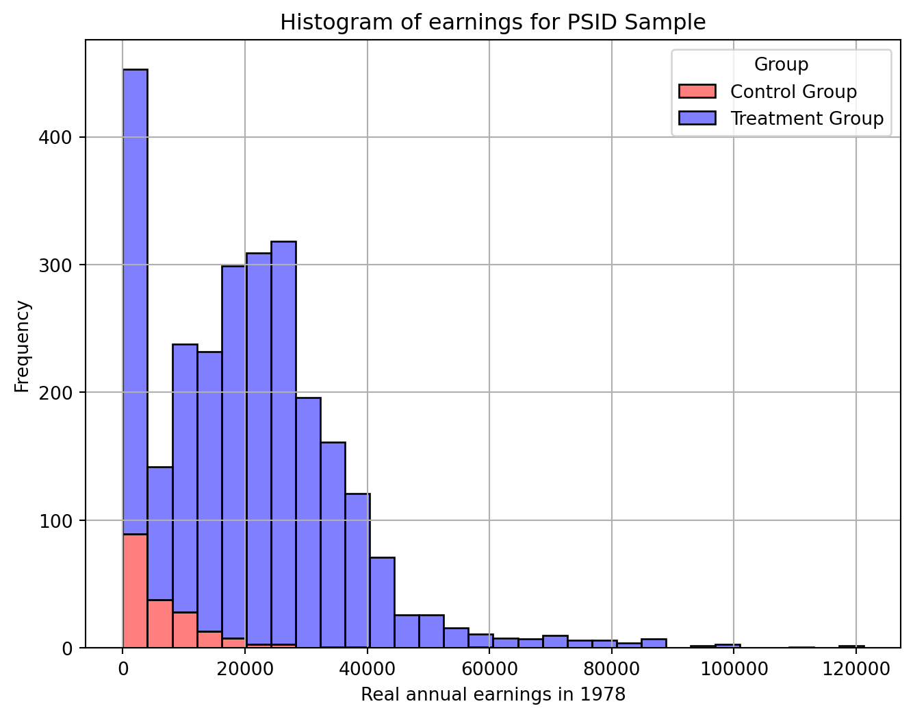
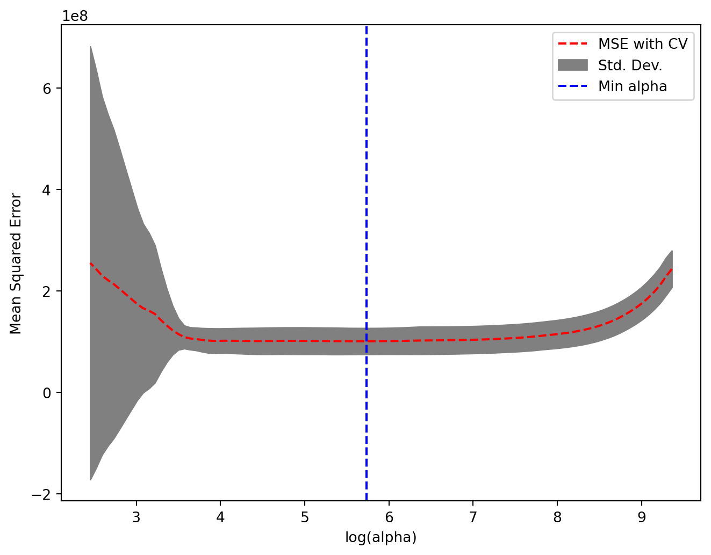
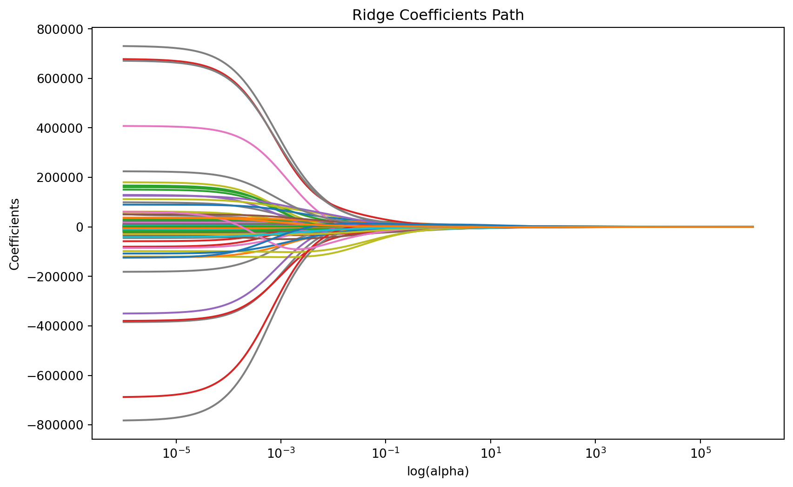
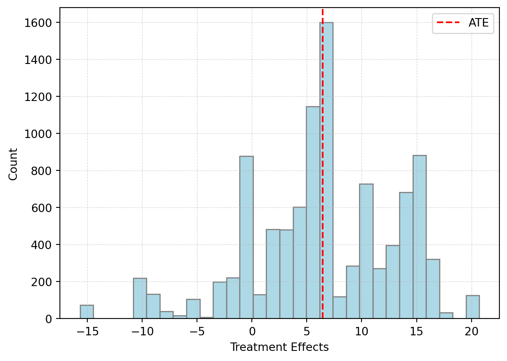
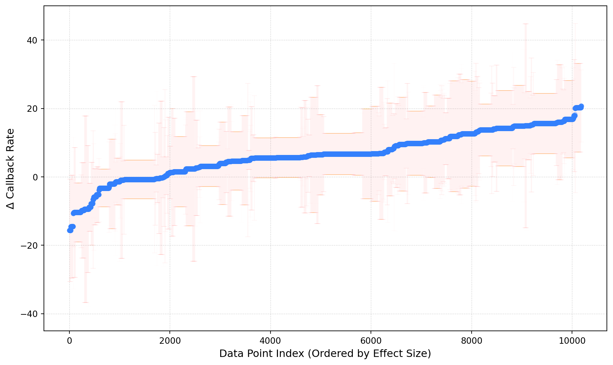
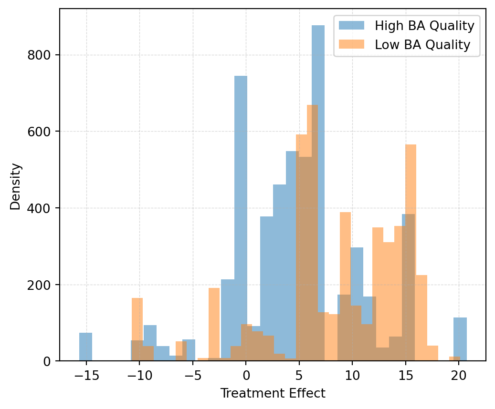
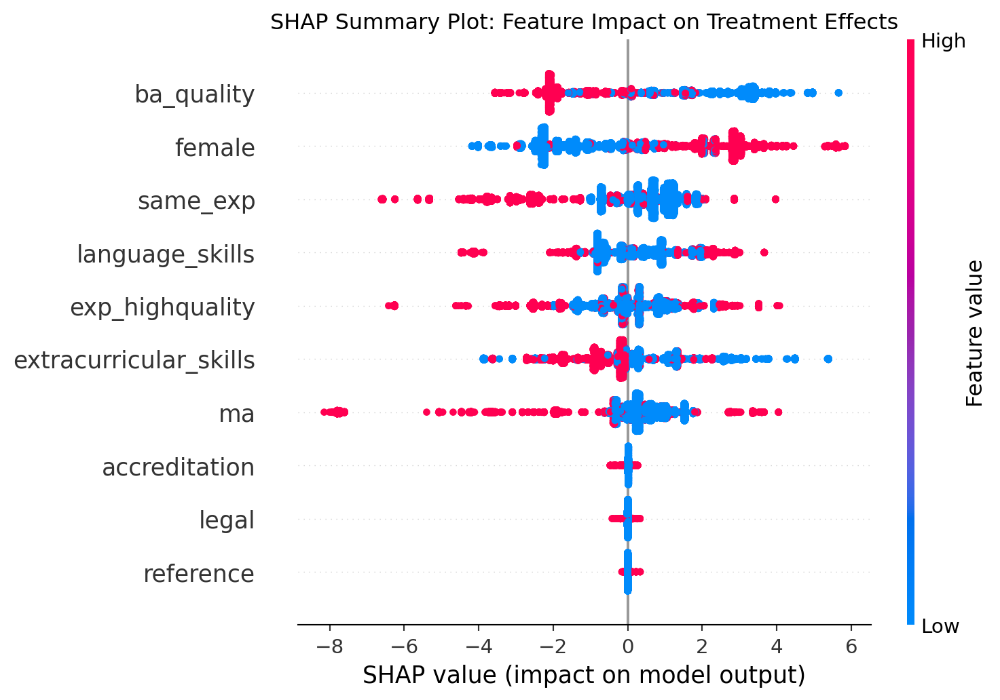
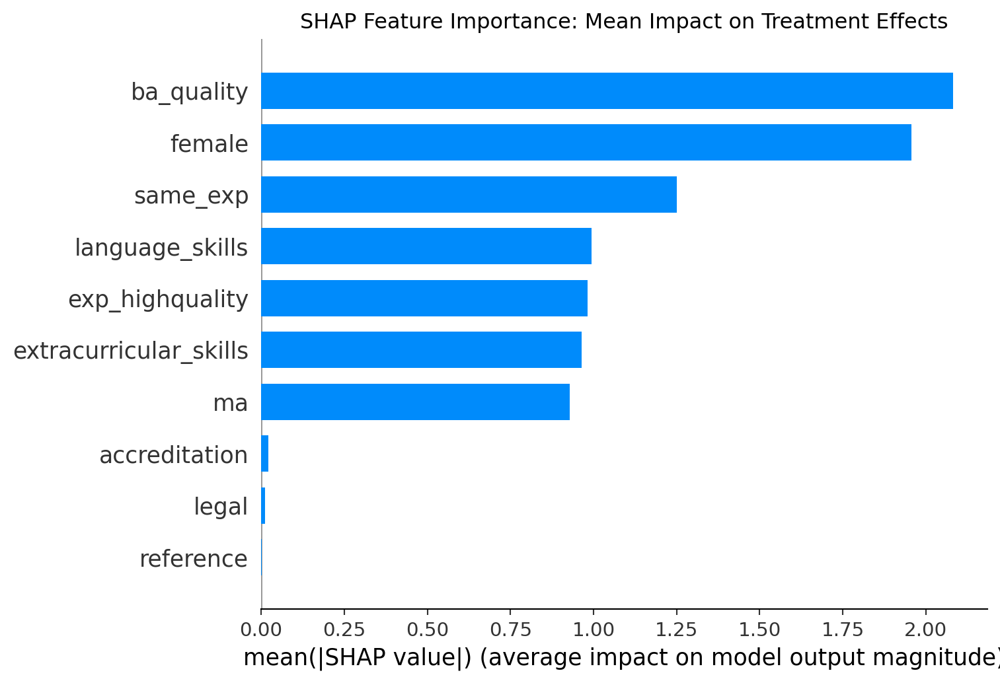

# Loading all packages.
import pandas as pd # For data manipulation.
import numpy as np # For numerical analysis.
import matplotlib.pyplot as plt # For data visualization.
import seaborn as sns # For data visualization (e.g., histograms).
import statsmodels.formula.api as smf # For estimating statistical models.Chapter 9
Code Call-out 9.1:
This Code Call Out is under construction.
As we have already seen in Chapter 3, this code call out estimates the effect of the experimental National Supported Work (NSW) demonstration, a labor training program on postintervention earnings estimated by LaLonde (1986). Individuals were randomly assigned to either a treated group -which participated in the approximately 12 month program-, or a control group that did not. Because this was an experimental evaluation, the treatment effect is known, and LaLonde (1986) aimed to document how the estimated effect varies when using an observational control group selected from large surveys.
This analysis was revisited later by Dehejia and Wahba (2002), Dehejia and Wahba (1999) using propensity score matching methods. In these studies, the authors considered the same treated group and estimated treatment effects matching it to a control group drawn from the same large surveys (specifically, the PSID and CPS from the United States). They observed that when propensity score matching procedure is used the observational methods actually do a reasonably good job in approximating the true experimental estimate.
In this case we will conduct a similar analysis using Machine Learning methods revisiting the NSW data for treatment group, and both the NSW sample and PSID sanple for the comparison group following Farrell (2015). The main goal of this exercise is “model selection” rather than conducting a comprehensive evaluation of the labor training program.
This dataset consist of both the NSW experimental sample (nsw == 1) and the PSID survey sample (nsw == 0) for control groups. Within both the NSW and PSID samples, there are treated and control units (indicated by the treat variable). The dataset also contains information about their earnings in 1978 (y) after the completition of the program (in case of treated observations), as well as several other demographic covariates and pre-treatment earnings (1974 and 1975). Specifically:
- y: earn1978
- treat: 1 if individual i received the training program and 0 if not.
- v3: age
- v4: education
- v5: black
- v6: hispanic
- v7: married
- v8: nodegree
- v9: re74
- v10: re75
- v11: re74 == 0
- v12: re75 == 0
- v13-v34: interactions of continuous variables (age, education, re74, re75 with
all covariates)
- v35-v48: interactions of dummy variables (married, black, hispanic, nodegree, re74==0,
re75==0 with dummy covariates)
- v49-v173: polynomials up to order five of the continuous covariates (age,
educ, earn1974 earn1975)
- nsw: 1 if dataset uses NSW sample for control group and 0 if dataset uses PSID sample.
It is important to note that the original dataset does not contain interactions of continuous variables, interactions of dummy variables and polynomials up to order five of the continuous variables. However, as our main goal is to study the model selection, including these covariates will enable us to evaluate multiple models simultaneously and test which one adjusts better in terms of bias-variance tradeoff and finds the best prediction of the outcome variable.
Important
The subsequent methods we will analyze involve rescaling all covariates to address overfitting. To ensure comparability among covariates, it is necessary to standardize all covariates in our dataset, excluding the dependent variable and the treatment indicator.
Import data and Ordinary Least Squares.
First, we load all the libraries that we are going to use in this code callout.
Now, we load the data provided by Farrell (2015) using the pandas package and begin our analysis by filtering the experimental and observational samples.
# Import Farrell dataset
Farrell2015 = pd.read_csv("data/Farrell2015.csv")
# Filter the experimental sample
nsw = Farrell2015[Farrell2015['nsw'] == 1]
# Filter the observational sample
psid = Farrell2015[Farrell2015['nsw'] == 0]As an illustration, we can observe the number of individuals in the treatment and control groups for each of the samples using the .value_counts() command and calling the treat variable if we want to see the experimental sample NSW or the observational sample PSID.
# Experimental sample (NSW).
count_nsw_treat = nsw['treat'].value_counts().reset_index()
count_nsw_treat.columns = ['treat', 'count']
print(count_nsw_treat) treat count
0 0 260
1 1 185# Observational sample (PSID).
count_psid_treat = psid['treat'].value_counts().reset_index()
count_psid_treat.columns = ['treat', 'count']
print(count_psid_treat) treat count
0 0 2490
1 1 185In the experimental sample, there are a total of 445 observations, with 185 individuals in the treatment group and 260 individuals in the control group. In the non-experimental sample, there are 2,675 observations, with the same number of individuals in the treatment group and 2,490 in the control group.
Now, we will analyze the impact of the training program on individuals’ earnings and compare the differences across each sample. Since we have 174 covariates, we can streamline our code by separating the outcome variable, the treatment variable, and all covariates with an identifier to reference each type of variable. Given that the main analysis will be conducted using the observational sample, we extract those observations.
# Extract relevant variables
y = psid[['y']]
treat = psid[['treat']]
all_covariates = psid.loc[:, 'v3':'v173']Lasso with cross-validation operates on arrays and matrices. To avoid potential warnings that may arise from using arrays, we organize all these variables into a matrix format.
# PSID observations in matrix format.
y_matrix = y.values
treat_matrix = treat.values
all_covariates_matrix = all_covariates.valuesOne of the main concerns of LaLonde (1986) is that in the non-experimental sample (psid), there exists a raw difference between the treated group and the control group. This disparity is evident when viewing a histogram where the groups are clearly unbalanced. You can check how these results differ when using the experimental sample (nsw).
# Histogram of earnings for PSID Sample
plt.figure(figsize = (8, 6))
sns.histplot(data = psid, x = 'y', hue = 'treat', multiple = 'stack', bins = 30, palette = {0: "blue", 1: "red"}, alpha = 0.5, edgecolor = 'black')
# Customize the plot
plt.title("Histogram of earnings for PSID Sample")
plt.xlabel("Real annual earnings in 1978")
plt.ylabel("Frequency")
plt.legend(title = "Group", labels = ["Control Group", "Treatment Group"])
plt.grid(True)
# Save the plot
plt.show()
The simplest type of model to analize the impact of the labor program is a linear model only considering earnings (y) as dependent variable and treatment condition (treat) as independent variable. If our specification assumptions hold (unobservables in earnings and participation are uncorrelated), linear regression will provide an estimate of the Average Treatment Effect (ATE). In case of using the experimental sample with robust standard errors, this is equivalent to estimating:
# Experimental Benchmark.
experimental_benchmark = smf.ols('y ~ treat', data = nsw).fit()
eb_results = experimental_benchmark.get_robustcov_results(cov_type = 'HC1') # For heteroskedasticity-robust standard errors.
# Print the summary with robust standard errors
print(eb_results.summary()) OLS Regression Results
==============================================================================
Dep. Variable: y R-squared: 0.018
Model: OLS Adj. R-squared: 0.016
Method: Least Squares F-statistic: 7.155
Date: Fri, 28 Nov 2025 Prob (F-statistic): 0.00775
Time: 00:29:05 Log-Likelihood: -4542.7
No. Observations: 445 AIC: 9089.
Df Residuals: 443 BIC: 9098.
Df Model: 1
Covariance Type: HC1
==============================================================================
coef std err t P>|t| [0.025 0.975]
------------------------------------------------------------------------------
Intercept 4554.8011 340.204 13.388 0.000 3886.187 5223.415
treat 1794.3424 670.824 2.675 0.008 475.949 3112.736
==============================================================================
Omnibus: 282.071 Durbin-Watson: 2.064
Prob(Omnibus): 0.000 Jarque-Bera (JB): 3430.892
Skew: 2.547 Prob(JB): 0.00
Kurtosis: 15.613 Cond. No. 2.47
==============================================================================
Notes:
[1] Standard Errors are heteroscedasticity robust (HC1)This model predicts that the job training program implies an average of $1,794 extra annual earnings for treated individuals. These results are exactly the same results observed by LaLonde (1986). Throughout the rest of this notebook, this will serve as our ‘experimental benchmark’— the estimate from the randomized experiment — of the effect of the NSW program on the treatment group.
Note that to get these results it is not necessary to include control variables. This is because random assignment ensure us that both groups are comparable in terms of both observed an unobserved characteristics on average. Therefore, in terms of bias, we expect no selection bias that could affect our causal effect estimates.
On the other hand, estimating the effect of the labor program on annual earnings of the treatment group using the non-experimental control group is equivalent to estimating:
# Observational Benchmark
observational_benchmark = smf.ols('y ~ treat', data = psid).fit()
ob_results = observational_benchmark.get_robustcov_results(cov_type = 'HC1')
# Print
print(ob_results.summary()) OLS Regression Results
==============================================================================
Dep. Variable: y R-squared: 0.061
Model: OLS Adj. R-squared: 0.061
Method: Least Squares F-statistic: 537.4
Date: Fri, 28 Nov 2025 Prob (F-statistic): 1.78e-108
Time: 00:29:05 Log-Likelihood: -29544.
No. Observations: 2675 AIC: 5.909e+04
Df Residuals: 2673 BIC: 5.910e+04
Df Model: 1
Covariance Type: HC1
==============================================================================
coef std err t P>|t| [0.025 0.975]
------------------------------------------------------------------------------
Intercept 2.155e+04 311.785 69.131 0.000 2.09e+04 2.22e+04
treat -1.52e+04 655.914 -23.181 0.000 -1.65e+04 -1.39e+04
==============================================================================
Omnibus: 715.202 Durbin-Watson: 0.926
Prob(Omnibus): 0.000 Jarque-Bera (JB): 2698.177
Skew: 1.278 Prob(JB): 0.00
Kurtosis: 7.205 Cond. No. 3.96
==============================================================================
Notes:
[1] Standard Errors are heteroscedasticity robust (HC1)This model predicts that the job training program results in an average decrease of $15,205 in annual earnings for treated individuals. As we can observe, these results are clearly biased due to the absence of randomization. A natural solution to reduce this bias is to include various covariates in our specification. By incorporating variables such as age, education, black, hispanic, married, nodegree, re74, and re75 into our regression, we obtain the following results:
# Observational Benchmark with Covariates
observational_benchmark_covariates = smf.ols('y ~ treat + v3 + v4 + v5 + v6 + v7 + v8 + v9 + v10', data = psid).fit()
obc_results = observational_benchmark_covariates.get_robustcov_results(cov_type = 'HC1')
# Print
print(obc_results.summary()) OLS Regression Results
==============================================================================
Dep. Variable: y R-squared: 0.586
Model: OLS Adj. R-squared: 0.585
Method: Least Squares F-statistic: 225.1
Date: Fri, 28 Nov 2025 Prob (F-statistic): 2.60e-319
Time: 00:29:05 Log-Likelihood: -28447.
No. Observations: 2675 AIC: 5.691e+04
Df Residuals: 2665 BIC: 5.697e+04
Df Model: 9
Covariance Type: HC1
==============================================================================
coef std err t P>|t| [0.025 0.975]
------------------------------------------------------------------------------
Intercept -129.7425 1878.371 -0.069 0.945 -3812.954 3553.469
treat 751.9464 783.257 0.960 0.337 -783.907 2287.799
v3 -2992.1728 743.228 -4.026 0.000 -4449.535 -1534.811
v4 7336.0127 1516.569 4.837 0.000 4362.242 1.03e+04
v5 1123.1640 451.739 2.486 0.013 237.370 2008.958
v6 -308.3528 236.662 -1.303 0.193 -772.412 155.706
v7 401.2603 225.808 1.777 0.076 -41.517 844.038
v8 6346.7534 1409.224 4.504 0.000 3583.470 9110.037
v9 1.285e+04 1502.910 8.548 0.000 9899.491 1.58e+04
v10 340.8424 367.633 0.927 0.354 -380.033 1061.718
==============================================================================
Omnibus: 984.552 Durbin-Watson: 1.892
Prob(Omnibus): 0.000 Jarque-Bera (JB): 21373.715
Skew: 1.215 Prob(JB): 0.00
Kurtosis: 16.633 Cond. No. 26.0
==============================================================================
Notes:
[1] Standard Errors are heteroscedasticity robust (HC1)As we can see, our model still produces a biased estimator of the effect of the training program on annual earnings. Although this adjustment is an improvement over including only the treatment status as a covariate, it still assumes that the observable characteristics of the trainees and the comparison group differ, and their unobservable characteristics may also differ (LaLonde (1986)).
Lasso Selection and Post-Lasso.
In non-experimental evaluations, treatment effects depend heavily on how the econometric model is specified. In the best scenario if the econometric model perfectly specified, we should observe the same results using an experimental and non-experimental samples. The key is to select the right model.
Given the previous analysis, we could attempt to overfit our model by including all available covariates in our dataset. Considering the collinearity problems, we exclude v3, v4, v8 and v9. This is equivalent to estimating:
# We consider all covariates but nsw, v3, v4, v8 and v9 and create a shortcut
covariates = psid.drop(columns = ['y', 'nsw', 'v3', 'v4', 'v8', 'v9'])
regression_on_allcovariates = 'y ~ treat + ' + ' + '.join(covariates.columns)
# Observational Benchmark with all Covariates
observational_all_covariates = smf.ols(regression_on_allcovariates, data = psid).fit()
oac_results = observational_all_covariates.get_robustcov_results(cov_type = 'HC1')
# Print
print(oac_results.summary()) OLS Regression Results
==============================================================================
Dep. Variable: y R-squared: 0.687
Model: OLS Adj. R-squared: 0.666
Method: Least Squares F-statistic: 2412.
Date: Fri, 28 Nov 2025 Prob (F-statistic): 0.00
Time: 00:29:06 Log-Likelihood: -28073.
No. Observations: 2675 AIC: 5.648e+04
Df Residuals: 2506 BIC: 5.748e+04
Df Model: 168
Covariance Type: HC1
==============================================================================
coef std err t P>|t| [0.025 0.975]
------------------------------------------------------------------------------
Intercept 4.81e+04 8368.776 5.748 0.000 3.17e+04 6.45e+04
treat 83.1633 933.452 0.089 0.929 -1747.252 1913.579
v5 151.6610 3915.343 0.039 0.969 -7525.978 7829.300
v6 -1788.1316 2775.190 -0.644 0.519 -7230.032 3653.769
v7 358.0123 1301.305 0.275 0.783 -2193.732 2909.757
v10 1.661e+04 1.2e+04 1.390 0.165 -6823.385 4e+04
v11 681.6223 3843.224 0.177 0.859 -6854.598 8217.843
v12 -8767.0449 4619.227 -1.898 0.058 -1.78e+04 290.848
v13 1826.1160 1968.663 0.928 0.354 -2034.256 5686.488
v14 305.0890 1845.293 0.165 0.869 -3313.366 3923.544
v15 1230.5777 1004.913 1.225 0.221 -739.968 3201.123
v16 -874.1249 455.549 -1.919 0.055 -1767.417 19.167
v17 1659.3699 1728.157 0.960 0.337 -1729.393 5048.132
v18 2342.7521 2018.288 1.161 0.246 -1614.932 6300.436
v19 2733.5234 3112.999 0.878 0.380 -3370.790 8837.837
v20 -1.512e+04 9364.797 -1.614 0.107 -3.35e+04 3247.908
v21 296.9129 2052.469 0.145 0.885 -3727.796 4321.622
v22 -159.4439 954.102 -0.167 0.867 -2030.354 1711.466
v23 -626.2438 3023.740 -0.207 0.836 -6555.530 5303.042
v24 5476.6475 3266.944 1.676 0.094 -929.540 1.19e+04
v25 -2528.3083 2554.116 -0.990 0.322 -7536.702 2480.085
v26 398.8543 1804.345 0.221 0.825 -3139.306 3937.014
v27 1375.9735 1175.184 1.171 0.242 -928.458 3680.405
v28 1000.9769 714.782 1.400 0.162 -400.647 2402.601
v29 2118.5242 1851.947 1.144 0.253 -1512.979 5750.027
v30 -2024.4156 2830.669 -0.715 0.475 -7575.105 3526.274
v31 2712.1604 1566.378 1.731 0.083 -359.368 5783.688
v32 -1498.5948 1078.405 -1.390 0.165 -3613.252 616.062
v33 -559.5500 660.140 -0.848 0.397 -1854.026 734.926
v34 -64.8437 1144.802 -0.057 0.955 -2309.698 2180.010
v35 -799.0915 794.868 -1.005 0.315 -2357.758 759.575
v36 440.0010 464.382 0.947 0.343 -470.610 1350.612
v37 392.1471 384.408 1.020 0.308 -361.643 1145.937
v38 -1011.7393 768.169 -1.317 0.188 -2518.051 494.572
v39 -618.0444 835.298 -0.740 0.459 -2255.990 1019.901
v40 -840.5464 592.492 -1.419 0.156 -2002.371 321.278
v41 27.2232 381.134 0.071 0.943 -720.147 774.593
v42 -252.9851 972.093 -0.260 0.795 -2159.173 1653.203
v43 1787.0513 1037.633 1.722 0.085 -247.655 3821.758
v44 305.6072 632.815 0.483 0.629 -935.287 1546.502
v45 471.3180 730.981 0.645 0.519 -962.071 1904.707
v46 33.9659 312.135 0.109 0.913 -578.102 646.034
v47 195.1246 360.738 0.541 0.589 -512.251 902.500
v48 -516.1192 1306.434 -0.395 0.693 -3077.920 2045.682
v49 -8930.5254 3592.559 -2.486 0.013 -1.6e+04 -1885.836
v50 2265.4328 1457.804 1.554 0.120 -593.191 5124.057
v51 -409.4101 1155.582 -0.354 0.723 -2675.404 1856.584
v52 332.0694 261.005 1.272 0.203 -179.738 843.877
v53 -0.1400 185.620 -0.001 0.999 -364.124 363.844
v54 7400.2155 5067.720 1.460 0.144 -2537.132 1.73e+04
v55 -6901.7708 3529.522 -1.955 0.051 -1.38e+04 19.307
v56 3549.8254 1543.192 2.300 0.022 523.764 6575.887
v57 307.4155 382.952 0.803 0.422 -443.520 1058.351
v58 -108.2220 261.041 -0.415 0.678 -620.100 403.656
v59 -9530.4698 4018.425 -2.372 0.018 -1.74e+04 -1650.696
v60 5419.2728 3022.345 1.793 0.073 -507.277 1.13e+04
v61 1384.0503 663.906 2.085 0.037 82.189 2685.911
v62 -851.9021 415.503 -2.050 0.040 -1666.666 -37.138
v63 4473.0533 2310.335 1.936 0.053 -57.308 9003.415
v64 522.9607 1025.492 0.510 0.610 -1487.938 2533.859
v65 -593.7383 559.424 -1.061 0.289 -1690.719 503.242
v66 630.5012 590.852 1.067 0.286 -528.106 1789.109
v67 -991.4487 498.954 -1.987 0.047 -1969.853 -13.044
v68 501.6255 386.564 1.298 0.195 -256.393 1259.644
v69 6.242e+04 3.18e+04 1.960 0.050 -14.316 1.25e+05
v70 -3.359e+04 1.95e+04 -1.721 0.085 -7.18e+04 4674.658
v71 9588.5753 5350.394 1.792 0.073 -903.072 2.01e+04
v72 1173.6707 1535.904 0.764 0.445 -1838.101 4185.442
v73 1114.5492 847.181 1.316 0.188 -546.697 2775.795
v74 1.45e+04 2.23e+04 0.652 0.515 -2.91e+04 5.81e+04
v75 -5001.5739 8876.212 -0.563 0.573 -2.24e+04 1.24e+04
v76 3309.5632 2548.064 1.299 0.194 -1686.965 8306.091
v77 -1513.7716 1116.292 -1.356 0.175 -3702.720 675.177
v78 -1.291e+04 1.08e+04 -1.199 0.231 -3.4e+04 8207.836
v79 2350.2903 4356.408 0.540 0.590 -6192.238 1.09e+04
v80 682.4563 1391.688 0.490 0.624 -2046.520 3411.433
v81 5801.6974 3116.315 1.862 0.063 -309.118 1.19e+04
v82 -2394.1109 2258.090 -1.060 0.289 -6822.025 2033.803
v83 85.0327 1045.324 0.081 0.935 -1964.755 2134.820
v84 1.673e+05 8.34e+04 2.006 0.045 3762.102 3.31e+05
v85 -8.01e+04 4.75e+04 -1.685 0.092 -1.73e+05 1.31e+04
v86 1.291e+04 7238.036 1.784 0.075 -1284.078 2.71e+04
v87 743.5750 2105.445 0.353 0.724 -3385.016 4872.166
v88 1.925e+04 4.21e+04 0.457 0.648 -6.34e+04 1.02e+05
v89 -2.253e+04 1.3e+04 -1.729 0.084 -4.81e+04 3027.657
v90 3874.5531 2413.469 1.605 0.109 -858.046 8607.152
v91 -1.919e+04 1.38e+04 -1.386 0.166 -4.63e+04 7966.350
v92 5551.9466 3970.449 1.398 0.162 -2233.750 1.33e+04
v93 5085.1391 2232.693 2.278 0.023 707.027 9463.251
v94 1.508e+05 7.44e+04 2.028 0.043 4991.002 2.97e+05
v95 -5.802e+04 3.53e+04 -1.641 0.101 -1.27e+05 1.13e+04
v96 5097.8685 3445.783 1.479 0.139 -1659.005 1.19e+04
v97 4532.4031 2.65e+04 0.171 0.864 -4.74e+04 5.65e+04
v98 -8689.9263 5300.574 -1.639 0.101 -1.91e+04 1704.027
v99 -7240.7663 6638.917 -1.091 0.276 -2.03e+04 5777.560
v100 5.835e+04 2.89e+04 2.017 0.044 1618.356 1.15e+05
v101 -1.615e+04 1.1e+04 -1.468 0.142 -3.77e+04 5422.552
v102 -2828.0374 8730.990 -0.324 0.746 -1.99e+04 1.43e+04
v103 6159.9798 5191.394 1.187 0.236 -4019.881 1.63e+04
v104 2.218e+05 5.36e+04 4.136 0.000 1.17e+05 3.27e+05
v105 -2.94e+04 1.32e+04 -2.224 0.026 -5.53e+04 -3483.339
v106 2987.7363 5247.213 0.569 0.569 -7301.581 1.33e+04
v107 -889.7722 1149.003 -0.774 0.439 -3142.864 1363.320
v108 -1025.3571 836.652 -1.226 0.220 -2665.958 615.243
v109 -4.524e+04 1.95e+04 -2.324 0.020 -8.34e+04 -7074.045
v110 -1.665e+04 7970.777 -2.089 0.037 -3.23e+04 -1020.670
v111 1726.3557 2022.866 0.853 0.394 -2240.305 5693.017
v112 2359.3840 1110.046 2.125 0.034 182.683 4536.085
v113 -3151.3022 8284.170 -0.380 0.704 -1.94e+04 1.31e+04
v114 6481.5522 4175.600 1.552 0.121 -1706.427 1.47e+04
v115 493.8445 1406.346 0.351 0.726 -2263.875 3251.564
v116 1962.1349 2577.291 0.761 0.447 -3091.704 7015.974
v117 2142.5880 2199.521 0.974 0.330 -2170.478 6455.654
v118 -906.8837 945.075 -0.960 0.337 -2760.092 946.325
v119 -1.816e+05 3.89e+04 -4.672 0.000 -2.58e+05 -1.05e+05
v120 6.182e+04 2.09e+04 2.954 0.003 2.08e+04 1.03e+05
v121 -5407.8170 3574.662 -1.513 0.130 -1.24e+04 1601.777
v122 315.1389 4126.096 0.076 0.939 -7775.769 8406.047
v123 6478.9646 2.18e+04 0.297 0.767 -3.63e+04 4.93e+04
v124 2.934e+04 1.04e+04 2.813 0.005 8884.334 4.98e+04
v125 -1.48e+04 4756.210 -3.112 0.002 -2.41e+04 -5475.052
v126 2.387e+04 9743.322 2.450 0.014 4763.339 4.3e+04
v127 -2.165e+04 7875.409 -2.749 0.006 -3.71e+04 -6210.122
v128 -1.312e+04 4888.290 -2.684 0.007 -2.27e+04 -3536.248
v129 -3.85e+05 1.54e+05 -2.506 0.012 -6.86e+05 -8.37e+04
v130 1.806e+05 6.92e+04 2.612 0.009 4.5e+04 3.16e+05
v131 -4798.1233 1.11e+04 -0.431 0.667 -2.66e+04 1.71e+04
v132 -1.061e+04 3.6e+04 -0.294 0.768 -8.13e+04 6e+04
v133 -9348.2384 1.16e+04 -0.806 0.420 -3.21e+04 1.34e+04
v134 2.675e+04 1.79e+04 1.494 0.135 -8348.509 6.18e+04
v135 -3.8e+05 1.2e+05 -3.157 0.002 -6.16e+05 -1.44e+05
v136 1.293e+05 4.96e+04 2.610 0.009 3.22e+04 2.27e+05
v137 4611.2741 1.14e+04 0.403 0.687 -1.78e+04 2.7e+04
v138 -8.543e+04 2.84e+04 -3.012 0.003 -1.41e+05 -2.98e+04
v139 7.315e+05 1.75e+05 4.187 0.000 3.89e+05 1.07e+06
v140 -1.196e+05 4.27e+04 -2.803 0.005 -2.03e+05 -3.59e+04
v141 7708.6980 8409.004 0.917 0.359 -8780.612 2.42e+04
v142 -295.2661 2170.585 -0.136 0.892 -4551.589 3961.057
v143 -1.235e+05 4.38e+04 -2.817 0.005 -2.09e+05 -3.75e+04
v144 -1.918e+04 1.37e+04 -1.405 0.160 -4.6e+04 7595.045
v145 6398.1331 2783.537 2.299 0.022 939.865 1.19e+04
v146 -5902.9123 1.28e+04 -0.461 0.645 -3.1e+04 1.92e+04
v147 1.016e+04 3887.585 2.615 0.009 2541.483 1.78e+04
v148 4887.7215 2299.382 2.126 0.034 378.839 9396.604
v149 -7.833e+05 2.64e+05 -2.962 0.003 -1.3e+06 -2.65e+05
v150 1.125e+05 4.56e+04 2.464 0.014 2.3e+04 2.02e+05
v151 -1.056e+04 1.24e+04 -0.855 0.393 -3.48e+04 1.37e+04
v152 9.001e+04 3.74e+04 2.404 0.016 1.66e+04 1.63e+05
v153 3.731e+04 1.33e+04 2.796 0.005 1.11e+04 6.35e+04
v154 -1.655e+04 2.07e+04 -0.799 0.424 -5.72e+04 2.41e+04
v155 6.788e+05 1.52e+05 4.468 0.000 3.81e+05 9.77e+05
v156 -3.504e+05 1.01e+05 -3.479 0.001 -5.48e+05 -1.53e+05
v157 -3.643e+04 3.48e+04 -1.047 0.295 -1.05e+05 3.18e+04
v158 4.081e+05 1.64e+05 2.483 0.013 8.59e+04 7.3e+05
v159 6.721e+05 1.61e+05 4.178 0.000 3.57e+05 9.88e+05
v160 -9.778e+04 3.36e+04 -2.907 0.004 -1.64e+05 -3.18e+04
v161 5553.9430 4404.587 1.261 0.207 -3083.060 1.42e+04
v162 -1.078e+05 3.46e+04 -3.118 0.002 -1.76e+05 -4e+04
v163 -6017.5496 6760.358 -0.890 0.373 -1.93e+04 7238.912
v164 2116.9315 7614.409 0.278 0.781 -1.28e+04 1.7e+04
v165 -6.885e+05 2.02e+05 -3.415 0.001 -1.08e+06 -2.93e+05
v166 1.263e+05 3.89e+04 3.243 0.001 4.99e+04 2.03e+05
v167 5.029e+04 1.91e+04 2.636 0.008 1.29e+04 8.77e+04
v168 6.145e+04 2.02e+05 0.304 0.761 -3.35e+05 4.58e+05
v169 2.248e+05 5.35e+04 4.203 0.000 1.2e+05 3.3e+05
v170 -2.918e+04 9788.163 -2.981 0.003 -4.84e+04 -9986.131
v171 -4.079e+04 1.3e+04 -3.131 0.002 -6.63e+04 -1.52e+04
v172 -1.243e+05 4.6e+04 -2.701 0.007 -2.15e+05 -3.41e+04
v173 3.749e+04 9322.136 4.021 0.000 1.92e+04 5.58e+04
==============================================================================
Omnibus: 671.501 Durbin-Watson: 1.922
Prob(Omnibus): 0.000 Jarque-Bera (JB): 8759.378
Skew: 0.814 Prob(JB): 0.00
Kurtosis: 11.714 Cond. No. 1.01e+04
==============================================================================
Notes:
[1] Standard Errors are heteroscedasticity robust (HC1)
[2] The condition number is large, 1.01e+04. This might indicate that there are
strong multicollinearity or other numerical problems.In this case, despite a slight improvement in our estimations by including 174 covariates compared to our observational benchmark, our model produces a poorer estimator compared to when only 8 covariates were included (and remains biased). The reasoning is that when our model becomes overly complex relative to the available data, it may capture many specific fluctuations that reduce its predictive power. These issues can be addressed using Machine Learning techniques such as model selection and tuning, cross-validation, and regularization to penalize the unnecessary complexity of our model.
Lasso Selection (with an arbitrary penalty):
When dealing with numerous explanatory variables, we can enhance our model by introducing additional penalties to discourage the inclusion of many variables. This can be achieved using the ‘Least Absolute Shrinkage and Selection Operator (LASSO)’ method. The Lasso method extends our Ordinary Least Squares (OLS) optimization problem by adding a constraint on the coefficients, which enforces some of them to be exactly zero. This coefficient shrinkage is controlled by a alpha parameter that determines the strength of the regularization.
Lasso regression regularizes includes the sum of the absolute value of coefficients in the estimation minimand.
\[ \underset{\beta}{\text{argmin}}\left\{\sum_{i=1}^N(Y_i-X^\prime\beta)^2+\alpha(||\beta||_1)\right\} \tag{1}\]
During the optimization process, Lasso eliminates all covariates that are not significantly correlated with the outcome variable, thereby aiding in model selection and enabling more efficient predictions.
Considering the NSW sample we first analyze what happen when we impose an arbitrary value of alpha. When alpha equals 0 there is no penalty and we are in the same situation as OLS. No coefficients are set to zero and all covariates are selected. As we increase the value of alpha more coefficients are zero and fewer variables are used.
To run Lasso selection, we can use the Lasso command from the sklearn package. We select an arbitrary alpha using the alpha option and specify the number of iterations. Next, we fit our model using the .fit function, including the dependent variable and all covariates. It is important to exclude the treatment variable from this process to accurately determine the optimal alpha parameter. For this procedure, we set a alpha value of 11 and specify 10,000 iterations.
from sklearn.linear_model import Lasso
# Lasso selection with alpha value of 11
lasso_with_alpha_11 = Lasso(alpha = 11, max_iter = 10000)
lasso_with_alpha_11.fit(all_covariates_matrix, y_matrix)To see which covariates are retained after the selection process in list format, we can extract the non-zero coefficients from our fitted model into a NumPy array and print the selected coefficients. We could try to do this procedure manually using the .coef_ function that displays the optimal shrinkage coefficients after the regularization procedure. However, since our main goal is to use this set of selected regressors to refit the model by least squares, we should not rely on these estimates. The following code snippet demonstrates how to display the retained covariates.
# Get the selected (non-zero) coefficients
nonzero_coefficients = lasso_with_alpha_11.coef_ != 0
selected_coefficients = np.array(all_covariates.columns)[nonzero_coefficients]
# Lasso selected variables (with an arbitrary penalty of 11).
print("Selected coefficients with alpha = 11:")
for feature, coef in zip(selected_coefficients, lasso_with_alpha_11.coef_[nonzero_coefficients]):
print(f"{feature}: Selected")Selected coefficients with alpha = 11:
v6: Selected
v11: Selected
v12: Selected
v15: Selected
v16: Selected
v19: Selected
v20: Selected
v22: Selected
v24: Selected
v25: Selected
v26: Selected
v27: Selected
v28: Selected
v30: Selected
v31: Selected
v32: Selected
v33: Selected
v34: Selected
v35: Selected
v36: Selected
v37: Selected
v38: Selected
v40: Selected
v42: Selected
v43: Selected
v44: Selected
v45: Selected
v46: Selected
v47: Selected
v48: Selected
v49: Selected
v51: Selected
v52: Selected
v53: Selected
v54: Selected
v55: Selected
v56: Selected
v57: Selected
v58: Selected
v60: Selected
v61: Selected
v62: Selected
v63: Selected
v65: Selected
v66: Selected
v67: Selected
v68: Selected
v69: Selected
v70: Selected
v71: Selected
v72: Selected
v73: Selected
v75: Selected
v76: Selected
v77: Selected
v78: Selected
v79: Selected
v80: Selected
v81: Selected
v82: Selected
v83: Selected
v86: Selected
v87: Selected
v89: Selected
v91: Selected
v92: Selected
v95: Selected
v97: Selected
v98: Selected
v100: Selected
v101: Selected
v102: Selected
v103: Selected
v104: Selected
v105: Selected
v106: Selected
v107: Selected
v108: Selected
v109: Selected
v110: Selected
v111: Selected
v112: Selected
v113: Selected
v116: Selected
v117: Selected
v118: Selected
v121: Selected
v122: Selected
v123: Selected
v124: Selected
v125: Selected
v126: Selected
v128: Selected
v129: Selected
v130: Selected
v133: Selected
v135: Selected
v136: Selected
v137: Selected
v138: Selected
v141: Selected
v142: Selected
v144: Selected
v145: Selected
v147: Selected
v148: Selected
v151: Selected
v153: Selected
v154: Selected
v159: Selected
v160: Selected
v161: Selected
v162: Selected
v163: Selected
v164: Selected
v170: Selected
v171: Selected
v172: Selected
v173: Selected# Count the number of selected (non-zero) coefficients
print(f"\nNumber of selected coefficients: {np.sum(nonzero_coefficients)}")
Number of selected coefficients: 119Then, when imposing a alpha value of 11, Lasso selected 119 out of the 172 available covariates. As mentioned above, this represents a relatively small penalty. If we choose a larger penalty, such as alpha equals 1100, we should expect fewer covariates to be selected.
# Lasso selection with alpha value of 1100
lasso_with_alpha_1100 = Lasso(alpha = 1100)
lasso_with_alpha_1100.fit(all_covariates_matrix, y_matrix)# Get the selected (non-zero) coefficients
nonzero_coefficients = lasso_with_alpha_1100.coef_ != 0
selected_coefficients = np.array(all_covariates.columns)[nonzero_coefficients]
# Lasso selected variables (with an arbitrary penalty of 1100).
print("Selected features with alpha = 1100:")
for feature, coef in zip(selected_coefficients, lasso_with_alpha_1100.coef_[nonzero_coefficients]):
print(f"{feature}: Selected")Selected features with alpha = 1100:
v34: Selected
v54: Selected
v69: Selected
v104: Selected
v123: Selected
v126: Selected# Count the number of selected (non-zero) coefficients
print(f"\nNumber of selected coefficients: {np.sum(nonzero_coefficients)}")
Number of selected coefficients: 6As we can see, with alpha equals 1100 only 6 covariates are selected.
Another way to analyze this is by graphing the coefficients’ path over a range of alpha values. Here, we provide illustrative code for conducting this analysis. We start by considering a grid of 100 equally spaced alpha values that ranges from \(10^{-2}\) to \(10^{6}\) on a logarithmic scale. We then fit the model for each of the 100 alpha values and plot the coefficients’ path on a logarithmic scale.
# Define the range of alphas
grid = np.logspace(-2, 6, 100)
# Initialize an array to store coefficients
coefs = []
# Perform Lasso regression for each alpha and store the coefficients
for alpha in grid:
lasso = Lasso(alpha = alpha, max_iter = 10000)
lasso.fit(all_covariates_matrix, y_matrix)
coefs.append(lasso.coef_)
# Convert the list of coefficients to a numpy array for easier plotting
coefs = np.array(coefs)
# Plot the coefficients path
plt.figure(figsize=(8, 6))
for i in range(coefs.shape[1]):
plt.plot(grid, coefs[:, i])
plt.xscale('log')
plt.xlabel('log(alpha)')
plt.ylabel('Coefficients')
plt.title('Lasso Coefficients Path')
# Save the plot as a PNG file
plt.show()
This graph shows how each coefficient changes with varying values of the logarithm of alpha. Since we did not use a selection method, the graph displays the path of all coefficients. By using the this scale, we can determine the alpha required to eliminate covariates that are not significantly correlated with the outcome variable. A higher alpha imposes a stronger regularization process. As we will see later, after applying a selection method, all non-selected coefficients should converge to zero. The remaining coefficients are those selected by Lasso.
Considering the covariates selected by Lasso, we can run a regression for the non-experimental sample. As mentioned above, models using only the treatment variable or the treatment plus all covariates resulted in biased estimators of coefficients. By using the 119 selected covariates with a alpha value of 11 and the 6 covariates selected with a alpha value of 1100, this is equivalent to estimate:
# Regression with coefficients selected considering a alpha value of 11.
lasso_alpha11 = smf.ols('y ~ treat + v6 + v12 + v15 + v16 + v19 + v20 + v22 + v24 + v25 + v26 + v27 + v28 + v30 + v31 + v32 + v33 + v34 + v35 + v36 + v37 + v38 + v40 + v42 + v43 + v44 + v45 + v46 + v47 + v48 + v49 + v51 + v52 + v53 + v54 + v55 + v56 + v57 + v58 + v59 + v60 + v61 + v62 + v63 + v65 + v66 + v67 + v68 + v69 + v70 + v71 + v72 + v73 + v75 + v76 + v77 + v78 + v79 + v80 + v81 + v82 + v83 + v86 + v88 + v89 + v91 + v92 + v94 + v95 + v97 + v98 + v101 + v102 + v103 + v104 + v105 + v106 + v107 + v108 + v109 + v110 + v111 + v112 + v116 + v117 + v118 + v121 + v122 + v123 + v124 + v125 + v126 + v128 + v129 + v130 + v133 + v135 + v136 + v137 + v138 + v141 + v142 + v144 + v145 + v147 + v148 + v151 + v153 + v155 + v159 + v161 + v163 + v164 + v165 + v167 + v170 + v171 + v172 + v173', data = psid).fit()
ll11_results = lasso_alpha11.get_robustcov_results(cov_type = 'HC1')
# Print
print(ll11_results.summary()) OLS Regression Results
==============================================================================
Dep. Variable: y R-squared: 0.672
Model: OLS Adj. R-squared: 0.656
Method: Least Squares F-statistic: 1481.
Date: Fri, 28 Nov 2025 Prob (F-statistic): 0.00
Time: 00:31:17 Log-Likelihood: -28139.
No. Observations: 2675 AIC: 5.652e+04
Df Residuals: 2555 BIC: 5.722e+04
Df Model: 119
Covariance Type: HC1
==============================================================================
coef std err t P>|t| [0.025 0.975]
------------------------------------------------------------------------------
Intercept 1.94e+04 1200.481 16.159 0.000 1.7e+04 2.18e+04
treat 384.5692 970.881 0.396 0.692 -1519.225 2288.363
v6 -1533.1616 749.152 -2.047 0.041 -3002.168 -64.156
v12 -5017.3086 2350.676 -2.134 0.033 -9626.732 -407.886
v15 1277.2711 816.637 1.564 0.118 -324.067 2878.609
v16 -720.0302 359.465 -2.003 0.045 -1424.902 -15.158
v19 3019.9111 1148.031 2.631 0.009 768.745 5271.077
v20 -2275.5949 958.852 -2.373 0.018 -4155.801 -395.389
v22 399.2299 354.757 1.125 0.261 -296.410 1094.869
v24 4602.2441 2046.887 2.248 0.025 588.517 8615.971
v25 -2294.0894 2554.611 -0.898 0.369 -7303.407 2715.228
v26 517.4443 1830.953 0.283 0.777 -3072.858 4107.747
v27 1185.2382 1171.536 1.012 0.312 -1112.019 3482.496
v28 135.4556 671.677 0.202 0.840 -1181.631 1452.543
v30 -943.8270 2641.747 -0.357 0.721 -6124.011 4236.357
v31 2819.5787 1650.247 1.709 0.088 -416.379 6055.537
v32 -1182.2124 1073.314 -1.101 0.271 -3286.865 922.440
v33 249.9600 610.731 0.409 0.682 -947.618 1447.538
v34 1934.9375 871.020 2.221 0.026 226.960 3642.915
v35 -333.4417 489.582 -0.681 0.496 -1293.459 626.575
v36 484.6209 433.411 1.118 0.264 -365.252 1334.494
v37 212.5768 370.080 0.574 0.566 -513.111 938.265
v38 -843.8857 378.524 -2.229 0.026 -1586.132 -101.640
v40 -937.8047 419.740 -2.234 0.026 -1760.869 -114.740
v42 391.5753 648.546 0.604 0.546 -880.153 1663.304
v43 1314.1944 794.170 1.655 0.098 -243.087 2871.476
v44 280.4953 568.466 0.493 0.622 -834.205 1395.196
v45 399.2540 610.111 0.654 0.513 -797.108 1595.616
v46 -251.2774 268.683 -0.935 0.350 -778.136 275.581
v47 475.9443 308.827 1.541 0.123 -129.632 1081.520
v48 -601.7146 730.614 -0.824 0.410 -2034.370 830.940
v49 -1601.3866 588.086 -2.723 0.007 -2754.561 -448.213
v51 638.4414 484.176 1.319 0.187 -310.976 1587.859
v52 183.7408 271.246 0.677 0.498 -348.144 715.626
v53 100.2086 191.700 0.523 0.601 -275.694 476.111
v54 -170.9293 924.630 -0.185 0.853 -1984.029 1642.170
v55 497.3057 885.645 0.562 0.574 -1239.349 2233.960
v56 1767.4624 605.383 2.920 0.004 580.371 2954.554
v57 -254.9819 361.125 -0.706 0.480 -963.110 453.146
v58 77.9327 274.543 0.284 0.777 -460.417 616.282
v59 600.6312 998.929 0.601 0.548 -1358.161 2559.424
v60 -965.9976 615.032 -1.571 0.116 -2172.010 240.015
v61 903.6577 485.681 1.861 0.063 -48.712 1856.027
v62 -761.9385 385.524 -1.976 0.048 -1517.909 -5.968
v63 1715.3105 761.915 2.251 0.024 221.276 3209.345
v65 -268.3366 321.385 -0.835 0.404 -898.537 361.864
v66 42.7688 312.747 0.137 0.891 -570.495 656.032
v67 -452.1418 391.958 -1.154 0.249 -1220.729 316.445
v68 310.0556 269.718 1.150 0.250 -218.832 838.943
v69 5785.5832 2640.715 2.191 0.029 607.425 1.1e+04
v70 -971.7723 1118.950 -0.868 0.385 -3165.913 1222.368
v71 4274.8366 880.210 4.857 0.000 2548.839 6000.834
v72 1092.1662 740.447 1.475 0.140 -359.770 2544.103
v73 1376.8651 702.079 1.961 0.050 0.164 2753.566
v75 1237.8787 1368.547 0.905 0.366 -1445.695 3921.452
v76 2258.2114 1048.082 2.155 0.031 203.034 4313.388
v77 -644.2918 873.775 -0.737 0.461 -2357.671 1069.088
v78 1054.5303 1522.487 0.693 0.489 -1930.904 4039.964
v79 -1389.3452 1416.878 -0.981 0.327 -4167.691 1389.001
v80 748.7896 677.139 1.106 0.269 -579.007 2076.587
v81 1619.5627 1201.935 1.347 0.178 -737.304 3976.429
v82 -2139.1623 1202.919 -1.778 0.075 -4497.958 219.633
v83 -519.8563 905.325 -0.574 0.566 -2295.102 1255.389
v86 3977.3524 941.623 4.224 0.000 2130.930 5823.775
v88 1440.3178 3571.326 0.403 0.687 -5562.670 8443.306
v89 -3860.3918 2330.456 -1.656 0.098 -8430.166 709.382
v91 1886.8147 1547.095 1.220 0.223 -1146.873 4920.502
v92 -3703.0137 1193.101 -3.104 0.002 -6042.557 -1363.471
v94 -84.1244 1120.212 -0.075 0.940 -2280.739 2112.491
v95 2016.7864 1226.984 1.644 0.100 -389.197 4422.770
v97 4969.3199 3385.614 1.468 0.142 -1669.506 1.16e+04
v98 -3166.2654 1562.610 -2.026 0.043 -6230.376 -102.155
v101 2339.9574 1378.042 1.698 0.090 -362.236 5042.151
v102 2589.8164 2046.259 1.266 0.206 -1422.678 6602.311
v103 -1905.1437 1001.250 -1.903 0.057 -3868.488 58.200
v104 3653.5434 2492.213 1.466 0.143 -1233.420 8540.507
v105 -543.7258 680.828 -0.799 0.425 -1878.757 791.305
v106 -6874.5864 1772.110 -3.879 0.000 -1.03e+04 -3399.669
v107 1253.8073 728.141 1.722 0.085 -174.000 2681.614
v108 -1578.2122 735.762 -2.145 0.032 -3020.962 -135.463
v109 828.2384 1302.066 0.636 0.525 -1724.974 3381.450
v110 -1484.6045 2570.308 -0.578 0.564 -6524.703 3555.494
v111 263.7801 1325.540 0.199 0.842 -2335.461 2863.022
v112 1116.8537 995.505 1.122 0.262 -835.225 3068.932
v116 262.8451 1375.625 0.191 0.848 -2434.608 2960.298
v117 2091.6622 1129.249 1.852 0.064 -122.674 4305.999
v118 -136.3629 797.269 -0.171 0.864 -1699.721 1426.996
v121 -2134.3643 1331.676 -1.603 0.109 -4745.639 476.910
v122 -2419.4253 1492.011 -1.622 0.105 -5345.099 506.248
v123 3972.5697 2322.246 1.711 0.087 -581.106 8526.245
v124 411.4223 2230.199 0.184 0.854 -3961.759 4784.604
v125 -6156.7838 2055.762 -2.995 0.003 -1.02e+04 -2125.654
v126 -126.6567 2415.202 -0.052 0.958 -4862.610 4609.297
v128 -4390.6513 1682.456 -2.610 0.009 -7689.766 -1091.536
v129 3446.5794 1.28e+04 0.268 0.788 -2.17e+04 2.86e+04
v130 3767.5308 5829.028 0.646 0.518 -7662.569 1.52e+04
v133 1620.5197 4119.738 0.393 0.694 -6457.846 9698.885
v135 -1.368e+04 7768.403 -1.760 0.078 -2.89e+04 1557.201
v136 -9932.4947 4646.170 -2.138 0.033 -1.9e+04 -821.853
v137 -527.0119 1477.302 -0.357 0.721 -3423.842 2369.818
v138 -8342.0273 3778.624 -2.208 0.027 -1.58e+04 -932.550
v141 -9971.4660 3463.029 -2.879 0.004 -1.68e+04 -3180.836
v142 3854.0076 1193.601 3.229 0.001 1513.483 6194.532
v144 1868.5013 4817.742 0.388 0.698 -7578.575 1.13e+04
v145 4816.3858 1460.962 3.297 0.001 1951.595 7681.176
v147 3074.9611 950.003 3.237 0.001 1212.108 4937.814
v148 2929.8362 1197.763 2.446 0.015 581.150 5278.522
v151 168.7657 2727.825 0.062 0.951 -5180.206 5517.738
v153 5756.5644 5280.820 1.090 0.276 -4598.557 1.61e+04
v155 3537.3059 1.91e+04 0.185 0.853 -3.4e+04 4.11e+04
v159 649.2045 1044.961 0.621 0.534 -1399.851 2698.260
v161 -3527.6871 2152.475 -1.639 0.101 -7748.461 693.087
v163 83.7563 2887.143 0.029 0.977 -5577.623 5745.135
v164 1000.9039 876.965 1.141 0.254 -718.732 2720.539
v165 9284.2036 7751.682 1.198 0.231 -5916.015 2.45e+04
v167 -342.6793 2453.058 -0.140 0.889 -5152.863 4467.504
v170 927.5158 733.795 1.264 0.206 -511.377 2366.409
v171 -943.5047 1097.859 -0.859 0.390 -3096.289 1209.279
v172 1.425e+04 3416.811 4.172 0.000 7554.289 2.1e+04
v173 -1163.7177 726.093 -1.603 0.109 -2587.508 260.073
==============================================================================
Omnibus: 733.006 Durbin-Watson: 1.952
Prob(Omnibus): 0.000 Jarque-Bera (JB): 9969.772
Skew: 0.911 Prob(JB): 0.00
Kurtosis: 12.281 Cond. No. 360.
==============================================================================
Notes:
[1] Standard Errors are heteroscedasticity robust (HC1)# Regression with coefficients selected considering a alpha value of 1100.
lasso_alpha1100 = smf.ols('y ~ treat + v34 + v54 + v69 + v104 + v123 + v126', data = psid).fit()
ll1100_results = lasso_alpha1100.get_robustcov_results(cov_type = 'HC1')
# Print
print(ll1100_results.summary()) OLS Regression Results
==============================================================================
Dep. Variable: y R-squared: 0.597
Model: OLS Adj. R-squared: 0.596
Method: Least Squares F-statistic: 335.9
Date: Fri, 28 Nov 2025 Prob (F-statistic): 0.00
Time: 00:31:17 Log-Likelihood: -28414.
No. Observations: 2675 AIC: 5.684e+04
Df Residuals: 2667 BIC: 5.689e+04
Df Model: 7
Covariance Type: HC1
==============================================================================
coef std err t P>|t| [0.025 0.975]
------------------------------------------------------------------------------
Intercept 2.018e+04 195.734 103.081 0.000 1.98e+04 2.06e+04
treat 579.1528 698.650 0.829 0.407 -790.798 1949.104
v34 1840.0844 495.204 3.716 0.000 869.062 2811.107
v54 1802.9517 259.586 6.945 0.000 1293.942 2311.962
v69 5140.7152 846.876 6.070 0.000 3480.115 6801.315
v104 6324.3132 849.371 7.446 0.000 4658.820 7989.806
v123 -150.7896 594.130 -0.254 0.800 -1315.791 1014.212
v126 977.7428 548.958 1.781 0.075 -98.684 2054.170
==============================================================================
Omnibus: 850.350 Durbin-Watson: 1.905
Prob(Omnibus): 0.000 Jarque-Bera (JB): 16860.520
Skew: 1.005 Prob(JB): 0.00
Kurtosis: 15.134 Cond. No. 7.07
==============================================================================
Notes:
[1] Standard Errors are heteroscedasticity robust (HC1)As we can see, this regression still estimates biased coefficients. With 119 covariates, the model predicts that the job training program results in an average of $384 extra annual earnings for treated individuals. With 6 covariates, the model predicts an average of $579 extra annual earnings. Considering our experimental benchmark — the $1,794 estimate from the randomized experiment in ?@tbl-Experimental-Benchmark — and the non-experimental estimate of - $15,204 using only the treatment variable of ?@tbl-Observational-Benchmark, this represents a clear improvement in our estimation when using observational data. Additionally, in both cases, we can check that we obtain a higher R-squared values. However, these results are still worse compared to the non-experimental estimate with the treatment variable plus all demographic covariates in ?@tbl-Observational-Benchmark-Covariates, which is $751 extra annual earnings on average for treated individuals.
Lasso Selection (with cross-validation).
We can improve these results by using cross-validation to determine the penalties for covariate selection, rather than assigning an arbitrary value for alpha. This can be achieved using the LassoCV package of sklearn. To randomly split the sample in training set and testing set, we use the KFold package, selecting 10 splits and setting a seed to ensure reproducibility. Then, we run lasso with cross-validation with a random selection method. In each stage is important to set the seed; otherwise, we will get different results.”
We can improve these results by using cross-validation to determine the penalties for covariate selection, rather than assigning an arbitrary value for alpha. This can be achieved using the LassoCV class from scikit-learn. To randomly split the sample into a training set and a testing set, we use the KFold class, selecting 10 splits and setting a seed to ensure reproducibility. Then, we run Lasso with cross-validation to select the relevant coefficients using a random selection method and 10,000 iterations. It is important to set the seed at each stage; otherwise, we will obtain different results.
from sklearn.linear_model import LassoCV
from sklearn.model_selection import KFold
# Running KFold with 10 folds to randomly split the sample into training and testing sets.
kf = KFold(n_splits = 10, shuffle = True, random_state = 123)
# Running Lasso with cross-validation to select coefficients.
cvlasso = LassoCV(cv = kf, selection = 'random', random_state = 123, max_iter = 10000).fit(all_covariates_matrix, y_matrix.ravel())
Important
Depending on your data, you may sometimes need to provide a grid of alphas for LassoCV. The length of the grid should be selected based on the coefficients’ path analyzed graphically before. To generate the grid of alphas, you can use the logspace function from the NumPy package. If the grid is not provided, LassoCV automatically selects a range of alphas. In this case, the automatically selected grid ranges between 11 and 11,618, which is sufficient for this data.
# Optimal alpha with cross-validation
print(f"\nAlpha that minimizes the mean squared error: {cvlasso.alpha_}")
Alpha that minimizes the mean squared error: 308.598196989224# Get the selected (non-zero) coefficients
nonzero_coefficients = cvlasso.coef_ != 0
selected_coefficients = np.array(all_covariates.columns)[nonzero_coefficients]
# Lasso selected variables (with cross-validation penalties).
print("Selected coefficients with crosss-validation:")
for feature, coef in zip(selected_coefficients, cvlasso.coef_[nonzero_coefficients]):
print(f"{feature}: Selected")Selected coefficients with crosss-validation:
v22: Selected
v28: Selected
v34: Selected
v40: Selected
v49: Selected
v54: Selected
v59: Selected
v69: Selected
v73: Selected
v84: Selected
v95: Selected
v104: Selected
v118: Selected
v126: Selected
v137: Selected
v141: Selected
v148: Selected
v161: Selected
v163: Selected
v167: Selected# Count the number of selected (non-zero) coefficients
print(f"\nNumber of selected coefficients: {np.sum(nonzero_coefficients)}")
Number of selected coefficients: 20In this case, using 10-fold cross-validation, the alpha that minimizes the mean squared error and helps avoid overfitting is 308. With this tuning parameter, we only need to include 20 covariates in our regression model. Graphically, we can observe that the selected alpha with cross-validation is the alpha at which the smallest MSE is achieved by plotting the mean squared error across a range of alphas.
# Extracting cross-validation results
alphas = cvlasso.alphas_
mean_cv_errors = cvlasso.mse_path_.mean(axis = 1)
std_cv_errors = cvlasso.mse_path_.std(axis = 1)
# Plotting the cross-validation curve
plt.figure(figsize=(8, 6))
plt.plot(np.log(alphas), mean_cv_errors, label = 'MSE with CV', color = 'red', linestyle = '--')
plt.fill_between(np.log(alphas), mean_cv_errors - std_cv_errors, mean_cv_errors + std_cv_errors, color = 'grey', label = 'Std. Dev.')
# Marking the minimum alpha
min_alpha_idx = np.argmin(mean_cv_errors)
plt.axvline(np.log(alphas[min_alpha_idx]), color = 'blue', linestyle = '--', label = 'Min alpha')
plt.xlabel('log(alpha)')
plt.ylabel('Mean Squared Error')
plt.legend()
plt.show()
This plots the cross-validation curve (red dotted line) along with upper and lower standard deviation curves for each alpha. The blue vertical line represents the logarithm of the minimum alpha that corresponds to the mean-squared error with cross-validation. This means that a alpha of 308 (or ln(alpha) = 5,7), is enough to eliminate covariates that are not significantly correlated with the outcome variable. Then a higher alpha imposes a stronger regularization process, but at the expenses to get a higher mean-squared error.
Considering the non-experimental sample and the optimal covariates selected through cross-validation penalties, we can estimate the effect of the labor program on individuals’ earnings. This is equivalent to estimate:
# Post-Lasso with Cross-Validation Penalties.
lasso_cross_validation = smf.ols('y ~ treat + v22 + v28 + v34 + v40 + v49 + v54 + v59 + v69 + v73 + v84 + v95 + v104 + v118 + v126 + v137 + v141 + v148 + v161 + v163 + v167 ', data = psid).fit()
lcv_results = lasso_cross_validation.get_robustcov_results(cov_type = 'HC1')
# Print
print(lcv_results.summary()) OLS Regression Results
==============================================================================
Dep. Variable: y R-squared: 0.612
Model: OLS Adj. R-squared: 0.609
Method: Least Squares F-statistic: 188.5
Date: Fri, 28 Nov 2025 Prob (F-statistic): 0.00
Time: 00:31:21 Log-Likelihood: -28360.
No. Observations: 2675 AIC: 5.676e+04
Df Residuals: 2653 BIC: 5.689e+04
Df Model: 21
Covariance Type: HC1
==============================================================================
coef std err t P>|t| [0.025 0.975]
------------------------------------------------------------------------------
Intercept 2.008e+04 216.623 92.705 0.000 1.97e+04 2.05e+04
treat 1041.5921 831.959 1.252 0.211 -589.761 2672.945
v22 332.3958 229.402 1.449 0.147 -117.429 782.220
v28 220.6529 313.990 0.703 0.482 -395.037 836.343
v34 2106.1194 484.590 4.346 0.000 1155.908 3056.331
v40 -536.1020 237.378 -2.258 0.024 -1001.567 -70.637
v49 -1015.0582 199.987 -5.076 0.000 -1407.205 -622.911
v54 1157.7834 264.936 4.370 0.000 638.281 1677.286
v59 580.5271 290.577 1.998 0.046 10.746 1150.308
v69 5197.5520 768.651 6.762 0.000 3690.336 6704.768
v73 411.0447 261.122 1.574 0.116 -100.979 923.069
v84 -1247.4941 447.701 -2.786 0.005 -2125.373 -369.615
v95 -186.6145 432.935 -0.431 0.666 -1035.539 662.310
v104 5983.2154 817.048 7.323 0.000 4381.100 7585.331
v118 -574.1421 279.159 -2.057 0.040 -1121.534 -26.750
v126 427.6633 783.963 0.546 0.585 -1109.578 1964.904
v137 -320.3715 441.080 -0.726 0.468 -1185.268 544.525
v141 -1144.7141 448.722 -2.551 0.011 -2024.595 -264.833
v148 477.3134 259.128 1.842 0.066 -30.800 985.427
v161 -391.4422 455.989 -0.858 0.391 -1285.572 502.687
v163 -553.7610 276.727 -2.001 0.045 -1096.383 -11.139
v167 -748.7878 847.575 -0.883 0.377 -2410.762 913.186
==============================================================================
Omnibus: 847.674 Durbin-Watson: 1.915
Prob(Omnibus): 0.000 Jarque-Bera (JB): 16026.542
Skew: 1.014 Prob(JB): 0.00
Kurtosis: 14.819 Cond. No. 9.01
==============================================================================
Notes:
[1] Standard Errors are heteroscedasticity robust (HC1)As we can see, with 20 covariates, we obtain a better approximation of the experimental benchmark of table ?@tbl-Experimental-Benchmark. In this case, the model predicts that the job training program results in an average increase of $1,041 in annual earnings for treated individuals. What is particularly notable is that these results are not to disimilar to those found by Dehejia and Wahba (2002) and Dehejia and Wahba (1999), who estimated using Propensity Score Matching (PSM) for the non-experimental sample that the estimates could range between $1,473 and $1,691. Like their results, none of the estimates (using PSM and Post-Lasso) are statistically significant.
Considering the results shown above, it is important to emphasize that Machine Learning methods do not create quasi-experimental variations. These methods only select covariates from a large set of potential candidates. This implies that none of these results can be considered causal estimates of the program. To achieve causal estimates, the conditional independence assumption must hold (Angrist and Frandsen (2022)).
Some comments about the Post-Lasso procedure.
The presented procedure is called Post-Lasso. It involves using the Lasso-selected set of regressors for the dependent variable against all covariates to refit the model using least squares. One of the main characteristics of this procedure is that it helps remove the bias imposed by Lasso when shrinking coefficients towards zero. In contexts where the sample size is larger than the effective number of relevant covariates needed to predict the dependent variable (sometimes called the effective dimension), Lasso and Post-Lasso regression come close to the population regression function (Chernozhukov (2024)).
In the context of high-dimensional data, this property is less likely to hold. Many authors argue that when the number of effective covariates exceeds the number of observations, Post-Lasso can lead to biased estimators and incorrect confidence intervals.
A different procedure proposed in the literature is called Post-Double Lasso. This procedure consists in three steps:
Regress
yagainst all control variables and select relevant predictors using Lasso (i.e estimate Equation 1).Regress
treatagainst all control variables and select relevant predictors using Lasso.Regress
yagainsttreatand all control variables selected in the previous two steps.
By performing Post-Double Lasso, we can address part of the omitted-variable bias that might arise using Post-Lasso when not considering relevant variables correlated with the treatment variable, and obtain more accurate confidence intervals.
Ridge & Elastic Net.
Ridge Regressions.
In Machine Learning we commonly see alternative models which apply penalization techniques, or shrinkage methods, like the Lasso. Two common examples are Ridge and Elastic Net, which we will explore here. Ridge regression follows the same logic as Lasso regression but uses a different norm for the regularization procedure. In this case we include the sum of squared regression coefficients in the estimation minimand.
\[ \underset{\beta}{\text{argmin}}\left\{\sum_{i=1}^N(Y_i-X_i^\prime\beta)^2 +\alpha\sum_{j=1}^p\beta_j^2\right\}. \tag{2}\]
This change implies that Ridge Regression penalizes high coefficient values by introducing a penalty that shrinks them towards zero, but never sets them exactly to zero. As a result, this regularization method is not suitable for model selection but is useful in high-dimensional models where overfitting is a concern. The main goal of Ridge regression is to find coefficients estimates that fit the data well, by making the Residual Sum of Squares (RSS) small.
To perform Ridge regression, we use the RidgeCV package of scikit-learn, including the dependent variable and all the covariates in our model. As with Lasso regression, we include a seed to ensure reproducibility. The main difference is that here we include a range of alphas to avoid an inconsistent tuning parameter.
from sklearn.linear_model import RidgeCV
# Combine treat and all_covariates into a single matrix.
x_matrix = np.hstack((treat, all_covariates))
# Running KFold with 10 folds to randomly split the sample into training and testing sets.
kf = KFold(n_splits = 10, shuffle = True, random_state = 123)
# Define the range of alphas (if the grid is not provided, the selected alpha is 10).
grid = np.logspace(-6, 6, 200)
# Ridge regularization with cross-validation.
cvridge = RidgeCV(alphas = grid, cv = kf).fit(x_matrix, y_matrix.ravel())# Optimal alpha with cross-validation.
print(f"\nAlpha that minimizes the mean squared error: {cvridge.alpha_}")
Alpha that minimizes the mean squared error: 1109.7524964120698As we can see, the alpha that optimizes our objective function is 1,109. Here we have to consider that independently that this is a high penalization, all covariates were selected. We can plot each standardized variable as a function of the logarithm of lambda using the Ridge package and check that this penalization minimizes the mean squared error.
from sklearn.linear_model import Ridge
# Define a range of alphas
alphas = np.logspace(-6, 6, 200)
# Initialize an array to store coefficients.
coefs = []
# Perform Ridge regression for each alpha and store the coefficients.
for alpha in alphas:
ridge = Ridge(alpha = alpha)
ridge.fit(x_matrix, y_matrix.ravel())
coefs.append(ridge.coef_)
# Convert the list of coefficients to a numpy array for easier plotting.
coefs = np.array(coefs)
# Plot the coefficients path.
plt.figure(figsize = (10, 6))
for i in range(coefs.shape[1]):
plt.plot(alphas, coefs[:, i])
plt.xscale('log')
plt.xlabel('log(alpha)')
plt.ylabel('Coefficients')
plt.title('Ridge Coefficients Path')
plt.show()
With the tuning parameter lambda set to 1,109, we can see the penalized coefficients using que .coef_ function.
# Print the coefficients.
print("Coefficients:", cvridge.coef_)Coefficients: [-103.31688232 -48.95334369 246.16315921 117.18450152 -355.12470837
-56.91726966 1136.76748887 1359.76666486 -433.61221625 -215.04881992
-346.83883762 -24.96686155 -336.33966303 -208.11649584 -72.09133962
-330.09614205 -407.54723732 296.10085296 -342.93764472 -221.35876221
129.06372945 -209.46457527 -277.35851413 804.28826096 423.30429831
280.89860943 246.501551 168.43643111 1018.30149178 794.1293205
140.50388655 234.10178543 1413.51283451 -154.47927291 36.56859822
67.84937556 -206.02158821 -283.2285935 -538.24807186 -236.15935363
177.61621839 26.64626072 177.62849763 334.77734318 -178.15958923
400.89173514 -457.58246039 -166.93937237 -489.16949403 221.14439604
9.24493205 -115.75622386 997.94857797 -17.9433427 115.77881548
53.80444673 -206.81088223 344.787836 -97.3168852 220.29757422
-6.17869794 8.54567924 53.85987678 5.88652307 -39.28070151
-162.05569343 111.93156016 1890.4449241 493.0207484 122.65264028
233.67355651 211.03792988 165.05862209 397.21677155 99.32354145
130.96273922 -151.04583993 70.17697087 90.69148495 -60.65852587
-206.29438096 -277.67892539 -635.25473845 185.86167922 21.83168155
93.43295712 -198.02990876 -233.23018135 -202.2839302 -92.49138896
-278.40003623 -323.09647708 -220.02447223 -478.89622828 -321.76900605
35.94118267 -253.6137707 51.50103322 667.73955311 191.70507789
-108.1246158 -407.42529953 2215.69777327 54.66160377 -483.49052242
189.36160756 -48.42579145 94.98989541 -386.4454412 -416.82021564
280.95119339 -85.80578473 -80.89327379 -7.83547362 -10.18802306
-34.02210773 -302.28693356 334.61542621 268.69383821 -397.47451661
42.95160585 617.15811555 169.41331103 -222.19151578 391.53464813
76.78955564 24.8675211 305.31057229 264.32866931 -44.30824167
172.97384397 323.06119358 73.06518522 -233.37873859 -150.72957513
-624.68228007 106.36854393 -564.50216851 72.64242572 -483.22652639
72.67015471 6.40448494 411.62876006 19.41122156 96.7866888
220.94955105 378.99763835 157.50564929 93.35565547 -206.15403939
106.72253376 97.20404129 148.77416546 92.79852658 56.25338412
66.37726173 53.89902762 -123.71508987 -152.07080941 596.70713711
-33.86667147 -461.08787094 7.99230328 -148.3717318 -91.38776086
-506.89576604 42.39262757 543.70095469 338.50258236 -110.43468844
374.84843285 -386.1671027 ]Comparing these results with the simple regression of y on the treatment indicator and all covariates (see ?@tbl-Regress-Without-Selection), we can see that all covariates experienced substantial shrinkage towards zero. Compared to Lasso, Ridge regression does not allow us to avoid shrinkage, as we cannot extract covariates and apply them in an OLS regression. Given the high level of penalization, these results are expected. Another remarkable result is that v3, v4, v8 and v9 were not ommited in our estimations as OLS did without penalization. This is due an important property of Ridge estimators: they do not suffer from multicollinearity. This is an important property which holds even when the number of regressors exceeds the sample size.
Elastic Net.
There are some contexts in which you might be working with datasets containing numerous covariates—so many that it is impractical to know everything about each one. In these cases we certainly need to use some regularization methods to estimate our coefficients effectively. The main challenge is that, in this context, we may have many covariates that are useless and many others that are useful. This is where Elastic Net comes into play.
Elastic Net is a regularization method that combines the advantages of Lasso and Ridge regression by taking a weighted average of their penalties.
\[ \underset{\beta}{\text{argmin}}\left\{\sum_{i=1}^N(Y_i-X_i^\prime\beta)^2 + \sum_{j=1}^p(L_{1}|\beta_j|+(1-L_{1})\beta_j^2)\right\}, \tag{3}\]
where the weight \(L_{1}\) ranges between 0 and 1. When \(L_{1}\) equals 0, the method reduces to Ridge regression, as discussed in the previous section. Conversely, when \(L_{1}\) equals 1, it corresponds to Lasso regression. Both parameters, \(L_{1}\) and alpha, are determined using cross-validation.
To perform Elastic Net regression, use the command ElasticNetCV package of scikit-learn considering an arbitrary value of alpha, and specifying the dependent variable, the treatment indicator variable, and all the covariates in the model. We ensure reproducibility by including a seed. Here we consider five different values for alpha, and their corresponding mean-squared errors are presented in table Table 6.
from sklearn.linear_model import ElasticNetCV
# Combine treat and all_covariates into a single matrix.
x_matrix = np.hstack((treat, all_covariates))
# Running KFold with 10 folds to randomly split the sample into training and testing sets.
kf = KFold(n_splits = 10, shuffle = True, random_state = 123)
# Define the range of alphas.
grid = np.logspace(-6, 6, 200)
# Ridge regularization with cross-validation.
cvelastic = ElasticNetCV(alphas = grid, cv = kf, l1_ratio = 0.5, max_iter = 1000).fit(x_matrix, y_matrix.ravel())| alpha | Mean-Squared Error |
|---|---|
| 1 | 101525463 |
| 0.75 | 105608908 |
| 0.50 | 105669281 |
| 0.25 | 105771775 |
| 0 | 105707807 |
Additional Considerations and Conclusion.
Even though we know that these regularization procedures do not provide causal interpretations when the conditional independence assumption does not hold, one of the main concerns related to these methods — specifically Lasso — is the wide variation in control variable choices induced by changes in tuning parameters (Angrist and Frandsen (2022)). In this section, we will explore some of these concerns and see how our results change with a few variations in the specification of our model. With these findings, we do not aim to undervalue the powerful methods outlined here, but rather to highlight some considerations that researchers should be aware of when using these machine learning methods in empirical analysis
Changing the Cross-Validation Seed.
As noted in the Lasso section, all of our specifications used a seed of 123. This seed resulted in Lasso selecting 20 covariates with cross-validation penalties and a lambda parameter of 308. We can modify this by using another seed such as 321 with the random_state = 321 option of KFold and LassoCV.
# Running KFold with 10 folds to randomly split the sample into training and testing sets.
kf = KFold(n_splits = 10, shuffle = True, random_state = 321)
# Running Lasso with cross-validation to select coefficients.
cvlasso = LassoCV(cv = kf, selection = 'random', random_state = 321, max_iter = 10000).fit(all_covariates_matrix, y_matrix.ravel())# Optimal alpha with cross-validation.
print(f"\nAlpha that minimizes the mean squared error: {cvlasso.alpha_}")
Alpha that minimizes the mean squared error: 354.8129357554887# Count the number of selected (non-zero) coefficients
print(f"\nNumber of selected coefficients: {np.sum(nonzero_coefficients)}")
Number of selected coefficients: 20This seed resulted in 18 selected variables with a penalization parameter of 354. By counting the non-zero coefficients of the .coef_ function, we can identify which variables were retained. These results are shown in column (2) of Table 7. Notably, with the 123 seed, all covariates included with the 321 seed were selected.
# Get the selected (non-zero) coefficients.
nonzero_coefficients = cvlasso.coef_ != 0
selected_coefficients = np.array(all_covariates.columns)[nonzero_coefficients]
# Lasso selected variables (with cross-validation penalties).
print("Selected coefficients with crosss-validation and '321' seed:")
for feature, coef in zip(selected_coefficients, cvlasso.coef_[nonzero_coefficients]):
print(f"{feature}: Selected")Selected coefficients with crosss-validation and '321' seed:
v22: Selected
v28: Selected
v34: Selected
v40: Selected
v49: Selected
v54: Selected
v69: Selected
v73: Selected
v84: Selected
v95: Selected
v104: Selected
v118: Selected
v126: Selected
v137: Selected
v148: Selected
v161: Selected
v163: Selected
v167: Selected (1) (2)
seed123 seed321
v22 X X
v28 X X
v34 X X
v40 X X
v49 X X
v54 X X
v59 X
v69 X X
v73 X X
v84 X X
v95 X X
v104 X X
v118 X X
v126 X X
v137 X X
v141 X
v148 X X
v161 X X
v163 X X
v167 X XWith these new covariates, we can estimate the effect of the labor program on individuals’ earnings using the non-experimental sample.
# Post-Lasso with Cross-Validation Penalties and '321' seed.
lasso_cross_validation = smf.ols('y ~ treat + v22 + v28 + v34 + v40 + v49 + v54 + v69 + v73 + v84 + v95 + v104 + v118 + v126 + v137 + v148 + v161 + v163 + v167 ', data = psid).fit()
lcv_results = lasso_cross_validation.get_robustcov_results(cov_type = 'HC1')
# Print
print(lcv_results.summary()) OLS Regression Results
==============================================================================
Dep. Variable: y R-squared: 0.609
Model: OLS Adj. R-squared: 0.607
Method: Least Squares F-statistic: 191.7
Date: Fri, 28 Nov 2025 Prob (F-statistic): 0.00
Time: 00:32:04 Log-Likelihood: -28370.
No. Observations: 2675 AIC: 5.678e+04
Df Residuals: 2655 BIC: 5.690e+04
Df Model: 19
Covariance Type: HC1
==============================================================================
coef std err t P>|t| [0.025 0.975]
------------------------------------------------------------------------------
Intercept 2.004e+04 218.820 91.587 0.000 1.96e+04 2.05e+04
treat 596.0487 847.945 0.703 0.482 -1066.651 2258.748
v22 218.9014 221.892 0.987 0.324 -216.198 654.000
v28 378.3230 318.602 1.187 0.235 -246.410 1003.056
v34 2052.6794 483.442 4.246 0.000 1104.717 3000.641
v40 -436.4448 238.877 -1.827 0.068 -904.849 31.959
v49 -841.4334 208.750 -4.031 0.000 -1250.762 -432.104
v54 1208.4628 273.375 4.421 0.000 672.414 1744.512
v69 5217.8125 781.990 6.672 0.000 3684.442 6751.183
v73 327.9179 260.109 1.261 0.208 -182.118 837.954
v84 -1005.0425 469.182 -2.142 0.032 -1925.042 -85.043
v95 -8.9944 452.896 -0.020 0.984 -897.059 879.070
v104 6014.9972 825.898 7.283 0.000 4395.528 7634.466
v118 -430.2801 263.036 -1.636 0.102 -946.057 85.497
v126 352.5230 575.521 0.613 0.540 -775.992 1481.038
v137 -291.6968 433.943 -0.672 0.502 -1142.597 559.203
v148 113.3660 231.000 0.491 0.624 -339.593 566.325
v161 450.7448 296.147 1.522 0.128 -129.958 1031.448
v163 -590.7537 282.035 -2.095 0.036 -1143.784 -37.724
v167 -766.2632 785.425 -0.976 0.329 -2306.371 773.844
==============================================================================
Omnibus: 865.093 Durbin-Watson: 1.915
Prob(Omnibus): 0.000 Jarque-Bera (JB): 16655.672
Skew: 1.039 Prob(JB): 0.00
Kurtosis: 15.046 Cond. No. 8.82
==============================================================================
Notes:
[1] Standard Errors are heteroscedasticity robust (HC1)Comparing these results with those reported in ?@tbl-LassoCV which considers the 123 seed, we observe that our treatment effect is now lower. Although our estimation underestimates the causal effect of the labor program relative to our experimental benchmark, this estimation is closer than estimation with the specification that included only the treatment variable.
This example demonstrate the wide variation in control variable choices induced by changes in tuning parameters and how they can impact our estimations. Researchers should be aware of these considerations when conducting impact evaluations using these methods for model selection. Despite this, the strength of machine learning methods lies in their ability to handle high-dimensional control scenarios and conduct sensitivity analyses in regression contexts where choosing among different model specifications is crucial for robustness. While these methods do not replace theory or human intuition, they can serve as valuable tools for guiding the testing of our results.
Code Call Out 9.2: Double-debiased Machine Learning
This Code Call Out is under construction.
Double Selection
As noted in the work of Belloni et al. (2012), consider a linear model where a variable, \(d_i\) is taken as exogenous after conditioning on control variables:
\[ y_i = \alpha d_i + x_i'\theta*y + r*{yi} +* \zeta\_i, \quad \quad E\[\zeta*i \| d_i, x_i, r{y,i}\] = 0 \]
Where \(d_i\) is the treatment, \(x_i\) is a high-dimensional vector of controls \((p > n)\), $r_{y_i} is the approximation error to the variable \(y_i\), and \(\alpha\) is the treatment effect.
Assume that we decide to select control variables using the LASSO approach that we explained in previous sections. Because LASSO optimizes prediction, not learning about specific model parameters, we can drop variables correlating with the treatment since they tend not to add much predictive power for the outcome when the treatment is in the model (Belloni et al. (2012)). Hence, it will lead to a substantial omitted variable bias if the coefficient in \(\theta_y\) associated with the omitted variable is nonzero.
We can remedy this by introducing the “reduced-form” equation
\[ d_i = x_i' \theta_d + r_{d,i} + v_i, \quad E[v_i \mid x_i, r_{d,i}] = 0, \]
and then writing the combined system in reduced-form predictive terms:
\[ y_i = x_i'(\alpha \theta_d + \theta_y) + (\alpha r_{d,i} + r_{y,i}) + (\alpha v_i + \zeta_i). \]
Both equations are now forecasting rules, so we can apply variable-selection methods separately to each one.
The recommended “double selection” procedure works as follows. First, use a variable-selection method (such as LASSO) to pick the controls that best predict the outcome. Second, use the same method to pick the controls that best predict the treatment. Third, take the union of those two sets of controls. Finally, estimate the treatment effect by regressing the outcome on the treatment and all controls in that combined set.
First, we import the relevant packages that we are going to use:
# Loading all packages.
import pandas as pd # For data manipulation.
import numpy as np # For numerical analysis.
import matplotlib.pyplot as plt # For data visualization.
import seaborn as sns # For data visualization (e.g., histograms).
import statsmodels.formula.api as smf # For estimating statistical models.
import statsmodels.api as sm # For estimating statistical models.
# For Machine Learning
from doubleml import DoubleMLData, DoubleMLPLR, DoubleMLDIDCS
#from doubleml.data import DoubleMLPanelData
from sklearn.linear_model import LassoCV
from sklearn.model_selection import KFold
# For data manipulation (constructing interacted variables)
from itertools import combinationsWe load the state-level panel data used by Belloni et al. (2012), which mirrors Donohue and Levitt’s 1985–1997 dataset (50 states × 12 years):
# Import data
data = pd.read_csv("data/Belloni_et_al_2014.csv")With data loaded, we can construct the first-difference variables for crime and abortion rates, define our large set of candidate controls (lagged crime and abortion variables, state characteristics, interactions, etc.), and then apply the double-selection routine exactly as outlined above to estimate the causal effect of legalized abortion on crime.
Code showing the data manipulation to create relevant variables
# %%
# Clean data for LASSO regressions
data["xxincome"] = data.xxincome / 100
data["xxpover"] = data.xxpover / 100
data["xxafdc15"]= data.xxafdc15/ 10000
data["xxbeer"] = data.xxbeer / 100
# Create trend
data = data[data["year"].between(85, 97)]
data["trend"] = (data["year"] - 85) / 12
# Drop DC
data = data[data["statenum"] != 9]
# Sorting data
data = data.sort_values(["statenum", "year"]) #
# Create first differences
group = data.groupby("statenum")
data["Dyviol"] = group.lpc_viol.diff()
data["Dviol"] = group.efaviol.diff()
data["Dyprop"] = group.lpc_prop.diff()
data["Dprop"] = group.efaprop.diff()
data["Dymurd"] = group.lpc_murd.diff()
data["Dmurd"] = group.efamurd.diff()
# differenced controls
raw = ["xxprison","xxpolice","xxunemp","xxincome","xxpover","xxafdc15","xxgunlaw","xxbeer"]
for var in raw:
data[f"D{var}"] = group[var].diff()
# Build control lists
Dxx = [f"D{v}" for v in raw]
# Squared differences
for v in Dxx:
data[f"{v}2"] = data[v] ** 2
Dxx2 = [f"{v}2" for v in Dxx]
# Pairwise interactions
DxxInt = []
for v1, v2 in combinations(Dxx, 2):
name = f"{v1}X{v2}"
data[name] = data[v1] * data[v2]
DxxInt.append(name)
# Lags
for v in raw:
data[f"L{v}"] = group[v].shift(1)
Lxx = [f"L{v}" for v in raw]
# Squared lags
for v in Lxx:
data[f"{v}2"] = data[v] ** 2
Lxx2 = [f"{v}2" for v in Lxx]
# Means by state
for v in raw:
data[f"M{v}"] = group[v].transform("mean")
Mxx = [f"M{v}" for v in raw]
# Squared means
for v in Mxx:
data[f"{v}2"] = data[v] ** 2
Mxx2 = [f"{v}2" for v in Mxx]
# Initial levels by state
for v in raw:
data[f"{v}0"] = group[v].transform("first")
xx0 = [f"{v}0" for v in raw]
# Squared initial levels
for v in xx0:
data[f"{v}2"] = data[v] ** 2
xx02 = [f"{v}2" for v in xx0]
# Initial differences (second row per state)
for v in Dxx:
data[f"{v}0"] = group[v].transform(lambda x: x.iloc[1] if len(x) > 1 else np.nan)
Dxx0 = [f"{v}0" for v in Dxx]
# Interactions with trend and trend^2
biglist = Dxx + Dxx2 + DxxInt + Lxx + Lxx2 + Mxx + Mxx2 + xx0 + xx02 + Dxx0
IntT = []
for v in biglist:
data[f"{v}Xt"] = data[v] * data["trend"]
data[f"{v}Xt2"] = data[v] * (data["trend"] ** 2)
IntT.extend([f"{v}Xt", f"{v}Xt2"])
# Outcome-specific controls for each outcome
outcomes = ["viol", "murd", "prop"]
AllControls = {}
for outcome in outcomes:
# Outcome-specific controls
data[f"{outcome}0"] = group[f"efa{outcome}"].transform("first")
data[f"D{outcome}0"] = group[f"D{outcome}"].transform(lambda x: x.iloc[1] if len(x) > 1 else np.nan)
data[f"{outcome}02"] = data[f"{outcome}0"] ** 2
data[f"D{outcome}02"] = data[f"D{outcome}0"] ** 2
data[f"{outcome}0Xt"] = data[f"{outcome}0"] * data["trend"]
data[f"{outcome}0Xt2"] = data[f"{outcome}0"] * (data["trend"] ** 2)
data[f"{outcome}02Xt"] = data[f"{outcome}02"] * data["trend"]
data[f"{outcome}02Xt2"] = data[f"{outcome}02"] * (data["trend"] ** 2)
data[f"D{outcome}0Xt"] = data[f"D{outcome}0"] * data["trend"]
data[f"D{outcome}0Xt2"] = data[f"D{outcome}0"] * (data["trend"] ** 2)
data[f"D{outcome}02Xt"] = data[f"D{outcome}02"] * data["trend"]
data[f"D{outcome}02Xt2"] = data[f"D{outcome}02"] * (data["trend"] ** 2)
cont = [
f"{outcome}0", f"{outcome}0Xt", f"{outcome}0Xt2", f"{outcome}02", f"{outcome}02Xt", f"{outcome}02Xt2",
f"D{outcome}0", f"D{outcome}0Xt", f"D{outcome}0Xt2", f"D{outcome}02", f"D{outcome}02Xt", f"D{outcome}02Xt2"
]
# Combine with generic controls (biglist, IntT)
AllControls[outcome] = cont + biglist + IntT
# Create year dummies and add to data
year_dummies = pd.get_dummies(data["year"], prefix="year", drop_first=True)
data = pd.concat([data, year_dummies], axis=1)
tdums = year_dummies.columns.tolist()
# Full list of controls by outcome
AllViol = AllControls["viol"]
AllMurd = AllControls["murd"]
AllProp = AllControls["prop"]
# drop any rows with missing differenced y or d
data = data.dropna(subset=["Dyviol","Dviol","Dyprop","Dprop","Dymurd","Dmurd"])We estimate the regressions for different scenarios:
\[ y_{c i t} = \alpha_{c}\,a_{c i t} + w_{i t}^{\prime}\beta_{c} + \delta_{c i} + \gamma_{c t} + \varepsilon_{c i t}. \]
The dependent variable, \(y_{c i t}\), indexes the crime rate for crime type \(c\) (violent, property, or murder) in state \(i\) and year \(t\). On the right‐hand side, \(a_{c i t}\) is the abortion rate relevant for type \(c\); \(w_{i t}\) is a vector of time‐varying state‐level controls; \(\delta_{c i}\) are state‐specific fixed effects; and \(\gamma_{c t}\) are time‐specific effects capturing national trends. For control variables \(w_{i t}\), Donohue and Levitt (2001) include the log of lagged prisoners per capita, the log of lagged police per capita, the unemployment rate, per‐capita income, the poverty rate, the generosity of AFDC at \(t-15\), a concealed‐weapons law dummy, and beer consumption per capita.
We observe crime and abortion rates over a twelve‐year period. To implement the double‐selection procedure outlined above, we fit the following first‐difference system:
\[ \Delta y_{c i t} = \alpha_{c}\,\Delta a_{c i t} + z_{c i t}^{\prime}\beta_{c} + \tilde{\gamma}_{c t} + \Delta\varepsilon_{c i t}, \]
\[ \Delta a_{c i t} = z_{c i t}^{\prime}\Pi_{c} + \tilde{\kappa}_{c t} + \Delta v_{c i t}, \]
where \(\Delta y_{c i t}=y_{c i t}-y_{c i,t-1}\), \(\Delta a_{c i t}=a_{c i t}-a_{c i,t-1}\), \(z_{c i t}\) is the vector of candidate controls, and \(\tilde{\gamma}_{c t}\), \(\tilde{\kappa}_{c t}\) are year effects.
Now, let’s consider that approach to do our Double selection approach manually. We’re going to use the LASSO procedure that we implemented in the previous section, now to both dependent variable and independent variable, and then run a regression taking the union of both controls.
np.random.seed(123)
# 1. Define the LASSO procedure and residualize on Fixed Effects
# Running KFold with 10 folds to randomly split the sample into training and testing sets.
kf = KFold(n_splits = 10, shuffle = True, random_state = 123)
# Running Lasso with cross-validation to select coefficients.
cvlasso = LassoCV(cv = kf, selection = 'random', random_state = 123, max_iter = 10000)
# Define controls
controls = data[AllViol]
controls = controls.apply(pd.to_numeric, errors='coerce').astype(float)
# 2. Run the regression on the Y outcome, obtain the relevant controls
y = pd.to_numeric(data["Dyviol"], errors='coerce').astype(float)
res_y = cvlasso.fit(controls, y.ravel())
# 3. Run the regression on the treatment, obtain the relevant controls
x = pd.to_numeric(data["Dviol"], errors='coerce').astype(float)
res_x = cvlasso.fit(controls, x.ravel())
# Take the relevant controls
selected_y = np.array(controls.columns)[res_y.coef_ != 0]
selected_x = np.array(controls.columns)[res_x.coef_ != 0]
selected_u = np.unique(np.concatenate([selected_y, selected_x]))
# 4. Take the union of the relevant controls, including year FE, and run the regression.
X_final = sm.add_constant(data[list(selected_u) + tdums].apply(pd.to_numeric, errors='coerce').astype(float))
X_final.insert(0, 'treat', pd.to_numeric(data["Dviol"], errors='coerce').astype(float))
y_final = pd.to_numeric(data["Dyviol"], errors='coerce').astype(float)
res_ds = sm.OLS(y_final, X_final).fit(
cov_type="cluster",
cov_kwds={"groups": data["statenum"]}
)
print(res_ds.summary()) OLS Regression Results
==============================================================================
Dep. Variable: Dyviol R-squared: 0.330
Model: OLS Adj. R-squared: 0.258
Method: Least Squares F-statistic: 38.25
Date: Fri, 28 Nov 2025 Prob (F-statistic): 1.59e-26
Time: 00:32:33 Log-Likelihood: 769.59
No. Observations: 600 AIC: -1421.
Df Residuals: 541 BIC: -1162.
Df Model: 58
Covariance Type: cluster
=================================================================================
coef std err z P>|z| [0.025 0.975]
---------------------------------------------------------------------------------
treat -0.1972 0.122 -1.623 0.105 -0.435 0.041
const 0.1175 0.043 2.714 0.007 0.033 0.202
Dxxafdc150 -0.0509 0.084 -0.607 0.544 -0.215 0.113
Dxxafdc150Xt -0.0519 0.157 -0.329 0.742 -0.360 0.257
Dxxafdc15Xt2 -0.0953 0.223 -0.428 0.668 -0.531 0.341
Dxxbeer0 0.2833 0.401 0.707 0.479 -0.502 1.069
Dxxgunlaw -0.0105 0.010 -1.045 0.296 -0.030 0.009
Dxxgunlaw2 -0.0105 0.010 -1.045 0.296 -0.030 0.009
Dxxpolice -0.0884 0.038 -2.336 0.019 -0.163 -0.014
Dxxpolice2 -0.1397 0.279 -0.501 0.616 -0.686 0.407
Dxxpover0 0.0472 0.293 0.161 0.872 -0.528 0.622
Dxxpover0Xt -0.1216 0.546 -0.223 0.824 -1.192 0.949
Dxxprison0 -0.1034 0.042 -2.489 0.013 -0.185 -0.022
Dxxprison2 0.2134 0.209 1.020 0.308 -0.197 0.623
Lxxafdc152 0.0188 0.039 0.486 0.627 -0.057 0.094
Lxxafdc152Xt -0.0573 0.103 -0.558 0.577 -0.258 0.144
Lxxafdc15Xt -0.0583 0.146 -0.400 0.689 -0.344 0.227
Lxxgunlaw 0.0162 0.017 0.942 0.346 -0.017 0.050
Lxxgunlaw2 0.0162 0.017 0.942 0.346 -0.017 0.050
Lxxgunlaw2Xt2 -0.0334 0.030 -1.114 0.265 -0.092 0.025
LxxgunlawXt2 -0.0334 0.030 -1.114 0.265 -0.092 0.025
LxxpoliceXt -0.1966 0.082 -2.406 0.016 -0.357 -0.036
Lxxprison2Xt2 -0.0121 0.027 -0.447 0.655 -0.065 0.041
LxxprisonXt 0.0277 0.072 0.385 0.700 -0.113 0.169
Lxxunemp -0.3872 0.186 -2.079 0.038 -0.752 -0.022
Mxxafdc152 0.0316 0.050 0.634 0.526 -0.066 0.129
Mxxafdc152Xt2 0.1396 0.131 1.064 0.287 -0.118 0.397
Mxxgunlaw -0.2247 0.139 -1.614 0.107 -0.498 0.048
Mxxgunlaw2 0.2474 0.176 1.403 0.161 -0.098 0.593
Mxxgunlaw2Xt -0.4600 0.389 -1.182 0.237 -1.223 0.303
Mxxgunlaw2Xt2 0.1497 0.128 1.169 0.242 -0.101 0.401
MxxgunlawXt 0.3318 0.316 1.050 0.294 -0.288 0.951
Mxxpolice2 0.0188 0.027 0.691 0.490 -0.035 0.072
Mxxpolice2Xt2 0.0779 0.046 1.697 0.090 -0.012 0.168
Mxxprison2 0.0126 0.024 0.516 0.606 -0.035 0.060
Mxxprison2Xt 0.0231 0.061 0.377 0.706 -0.097 0.143
MxxprisonXt -0.1191 0.103 -1.160 0.246 -0.320 0.082
viol0 -0.0154 0.163 -0.095 0.925 -0.334 0.304
xxafdc1502Xt 0.0419 0.084 0.499 0.617 -0.123 0.207
xxafdc1502Xt2 -0.1341 0.159 -0.844 0.399 -0.446 0.177
xxafdc150Xt2 -0.0086 0.158 -0.054 0.957 -0.319 0.302
xxbeer0Xt 0.0281 0.100 0.280 0.780 -0.169 0.225
xxgunlaw0 -0.0223 0.024 -0.932 0.352 -0.069 0.025
xxgunlaw02 -0.0223 0.024 -0.932 0.352 -0.069 0.025
xxgunlaw02Xt 0.0184 0.043 0.433 0.665 -0.065 0.102
xxgunlaw0Xt 0.0184 0.043 0.433 0.665 -0.065 0.102
xxpolice02 -0.0072 0.024 -0.300 0.764 -0.054 0.040
xxpover0 0.5775 0.180 3.204 0.001 0.224 0.931
xxpover0Xt -0.9264 0.364 -2.543 0.011 -1.640 -0.212
xxprison0 0.0399 0.022 1.831 0.067 -0.003 0.083
xxprison02Xt -0.0459 0.076 -0.605 0.545 -0.194 0.103
xxprison02Xt2 0.0549 0.098 0.560 0.575 -0.137 0.247
xxprison0Xt2 0.0135 0.056 0.242 0.809 -0.096 0.123
year_86 -0.1232 0.053 -2.318 0.020 -0.227 -0.019
year_87 -0.1656 0.040 -4.140 0.000 -0.244 -0.087
year_88 -0.0697 0.031 -2.242 0.025 -0.131 -0.009
year_89 -0.0385 0.031 -1.226 0.220 -0.100 0.023
year_90 0.0436 0.024 1.828 0.068 -0.003 0.090
year_91 0.0270 0.019 1.457 0.145 -0.009 0.063
year_92 0.0415 0.023 1.776 0.076 -0.004 0.087
year_93 0.0606 0.021 2.831 0.005 0.019 0.103
year_94 0.0618 0.028 2.227 0.026 0.007 0.116
year_95 0.0827 0.042 1.983 0.047 0.001 0.164
year_96 0.0618 0.053 1.174 0.240 -0.041 0.165
year_97 0.1356 0.064 2.118 0.034 0.010 0.261
==============================================================================
Omnibus: 49.852 Durbin-Watson: 2.135
Prob(Omnibus): 0.000 Jarque-Bera (JB): 135.043
Skew: -0.404 Prob(JB): 4.74e-30
Kurtosis: 5.179 Cond. No. 1.13e+16
==============================================================================
Notes:
[1] Standard Errors are robust to cluster correlation (cluster)
[2] The smallest eigenvalue is 3.48e-29. This might indicate that there are
strong multicollinearity problems or that the design matrix is singular.Double Debiased
While the double selection procedure helps address omitted variable bias by selecting controls relevant for both the outcome and treatment, Double/Debiased Machine Learning (DDML) goes a step further by orthogonalizing both variables with respect to the controls. This approach is closely related to the Frisch-Waugh-Lovell (FWL) theorem and is particularly useful in high-dimensional settings. Considering that we’re keeping all the times the year fixed effects, we’re going to always residualize for them.
We’re going to follow this procedure to do the manual approach: - Residualize the outcome and treatment on year fixed effects
Use LASSO to select relevant controls for both \(\Delta y_{c i t}\) and \(\Delta a_{c i t}\)
Partial out the selected controls from both \(\Delta y_{c i t}\) and \(\Delta a_{c i t}\): For each variable, regress the residualized outcome and treatment on their respective selected controls, and obtain the residuals.
Regress the residualized outcome on the residualized treatment: This final step estimates \(\alpha_c\) using only the variation in \(\Delta a_{c i t}\) that is orthogonal to the controls, yielding a debiased estimate.
This procedure can be summarized in code as:
np.random.seed(123)
# 1. Define the LASSO procedure and residualize on Fixed Effects
# Running KFold with 10 folds to randomly split the sample into training and testing sets.
kf = KFold(n_splits = 10, shuffle = True, random_state = 123)
# Running Lasso with cross-validation to select coefficients.
cvlasso = LassoCV(cv=kf, selection='random', n_jobs=-1,
random_state=123, max_iter=10000, eps =1e-3)
# Define controls
controls = data[AllViol]
controls = controls.apply(pd.to_numeric, errors='coerce').astype(float)
# 2. Residualize on year fixed effects
dummies = data[tdums]
# Residualize Y by year FE (always included controls)
y = pd.to_numeric(data["Dyviol"], errors='coerce').astype(float)
res_y = sm.OLS(y, dummies).fit()
data['Dyviol_res'] = res_y.resid
# Residualize D by year FE (always included controls)
x = pd.to_numeric(data["Dviol"], errors='coerce').astype(float)
res_x = sm.OLS(x, dummies).fit()
data['Dviol_res'] = res_x.resid
# 3. Residualize Dyviol on controls
y = pd.to_numeric(data["Dyviol_res"], errors='coerce').astype(float)
res_y = cvlasso.fit(controls, y.ravel())
selected_coef_y = res_y.coef_ != 0
selected_coef_y = np.array(controls.columns)[selected_coef_y]
print("Number of selected controls for Y: ", np.sum(res_y.coef_ != 0))
res_y = sm.OLS(y, controls[selected_coef_y]).fit()
r_y = res_y.resid
# 4. Residualize Dviol on controls
x = pd.to_numeric(data["Dviol_res"], errors='coerce').astype(float)
res_x = cvlasso.fit(controls, x.ravel())
selected_coef_x = res_x.coef_ != 0
selected_coef_x = np.array(controls.columns)[selected_coef_x]
print("Number of selected controls for X: ", np.sum(res_x.coef_ != 0))
res_x = sm.OLS(x, controls[selected_coef_x]).fit()
r_x = res_x.resid
# 5. FWL regression: r_y on r_x
X_fwl = sm.add_constant(r_x)
X_fwl = X_fwl.rename(columns={0: "treat"})
res_fwl = sm.OLS(r_y, X_fwl).fit(
cov_type="cluster",
cov_kwds={"groups": data["statenum"]}
)
print(res_fwl.summary())Number of selected controls for Y: 15Number of selected controls for X: 65
OLS Regression Results
==============================================================================
Dep. Variable: y R-squared: 0.007
Model: OLS Adj. R-squared: 0.005
Method: Least Squares F-statistic: 4.755
Date: Fri, 28 Nov 2025 Prob (F-statistic): 0.0340
Time: 00:33:03 Log-Likelihood: 753.43
No. Observations: 600 AIC: -1503.
Df Residuals: 598 BIC: -1494.
Df Model: 1
Covariance Type: cluster
==============================================================================
coef std err z P>|z| [0.025 0.975]
------------------------------------------------------------------------------
const 0.0013 0.002 0.539 0.590 -0.003 0.006
treat -0.2548 0.117 -2.181 0.029 -0.484 -0.026
==============================================================================
Omnibus: 49.300 Durbin-Watson: 2.051
Prob(Omnibus): 0.000 Jarque-Bera (JB): 146.843
Skew: -0.364 Prob(JB): 1.30e-32
Kurtosis: 5.312 Cond. No. 45.7
==============================================================================
Notes:
[1] Standard Errors are robust to cluster correlation (cluster)We can do a similar procedure using the command DoubleML from (DoubleML2022?) and obtain the same results if we don-t apply sample-splitting.
np.random.seed(123)
# Data Backend
dml_data = DoubleMLData(
data,
y_col="Dyviol_res",
d_cols="Dviol_res",
x_cols=AllViol
)
# 1. fit on the **full** sample
X, y, d = dml_data.x, dml_data.y.ravel(), dml_data.d.ravel()
ml_l = cvlasso.fit(X, y)
l_hat = ml_l.predict(X)
ml_m = cvlasso.fit(X, d)
m_hat = ml_m.predict(X)
external_predictions = {
"Dviol_res": { # first‑level key = treatment column name
"ml_l": l_hat.reshape(-1, 1),
"ml_m": m_hat.reshape(-1, 1)
}
}
# 2. build a PLR object *without* drawing a split
dml_nosplit = DoubleMLPLR(
dml_data,
ml_l=cvlasso,
ml_m=cvlasso,
score="partialling out"
)
dml_nosplit.fit(external_predictions=external_predictions)
print(dml_nosplit.summary) coef std err t P>|t| 2.5 % 97.5 %
Dviol_res -0.258414 0.12826 -2.014762 0.04393 -0.509799 -0.007028However, the best procedure comes when we apply cross fitting by splitting the sample. In this scenario, cross/fitting performs well empirically because the entire sample can be used for estimation. Instead of running the external predictions, we’re gonna use the option n_folds = to split the sample. If we split the sample on two, and repeat the procedure 2 times, we’ll obtain the following results:
np.random.seed(123)
# Data Backend
dml_data = DoubleMLData(
data,
y_col="Dyviol_res",
d_cols="Dviol_res",
x_cols=AllViol
)
# 1. build a PLR object with drawing a split
dml_split2 = DoubleMLPLR(
dml_data,
ml_l=cvlasso,
ml_m=cvlasso,
n_folds = 10,
n_rep=1,
score="partialling out"
)
dml_split2.fit()
print(dml_split2.summary) coef std err t P>|t| 2.5 % 97.5 %
Dviol_res -0.205699 0.113065 -1.819305 0.068865 -0.427302 0.015904Code Call Out 9.3: Matrix completion and other imputation methods
This Code Call Out is under construction.
import pandas as pd
data = pd.read_csv("data/Kumar_Liang_2024.csv")Code Call Out 9.4: Causal Trees with an RCT
This Code Call Out is under construction.
In this section, we’re going to study how to study heterogeneous treatment effects using Causal Trees. In particular, we’re going to work using the data from Oreopolous (2011), a field experiment examining discrimination against skilled immigrants in the Canadian labor market.
First, we import essential packages needed for our analysis. This includes libraries for data manipulation, statistical modeling, machine learning, and visualization. We then load the dataset directly into a pandas DataFrame.
import pandas as pd
import numpy as np
from econml.dml import CausalForestDML
from sklearn.model_selection import train_test_split
from sklearn.preprocessing import StandardScaler
from sklearn.ensemble import GradientBoostingRegressor, GradientBoostingClassifier
from statsmodels.stats.outliers_influence import variance_inflation_factor
import matplotlib.pyplot as plt
from statsmodels.iolib.table import SimpleTable
from statsmodels.stats.diagnostic import het_breuschpagan
from statsmodels.regression.linear_model import OLS
import statsmodels.api as sm
from statsmodels.stats.api import anova_lm
from statsmodels.api import add_constant
import shap
data = pd.read_stata("data/Oreopoulos_2011.dta")Next, we prepare the dataset for analysis. We define our dependent variable callback, which indicates whether a job applicant received a callback. Initially binary (0 or 1), we convert it to a scale from 0 to 100, enabling easier interpretation of results as percentage points (p.p.).
We define our treatment variable as canadian_name, indicating if the applicant has a Canadian-sounding name, and create a list of covariates (X_var) relevant for the analysis. These covariates represent applicant characteristics such as gender, education quality, and experience.
# Data Manipulation
data['canadian_name'] = (data['name_ethnicity'] == 'Canada').astype(int)
y_var = 'callback'
D_var = 'canadian_name'
X_var = ['female', 'ba_quality', 'extracurricular_skills', 'language_skills',
'ma', 'same_exp', 'exp_highquality', 'reference', 'accreditation',
'legal']
# Let's put the outcome variable (binary, 0 and 1) into 0 to 100 to interpret the results in percentual points.
assert y_var in data.columns, "'callback' is not found in the data"
assert D_var in data.columns, "'canadian_name' not found in the data"
for column in X_var:
assert column in data.columns, f"'{column}' is not found in the data"
Y = data[y_var]
D = data[D_var]
X = data[X_var]
Y=Y*100Let’s begin by estimating a standard regression in which callback rates are regressed on our variable of interest (Canadian-sounding name), as well as our full vector of covariates.
X_with_D = pd.concat([pd.DataFrame(X), D], axis=1)
# Drop rows with missing values
complete_data = pd.concat([Y, X_with_D], axis=1).dropna()
Y_clean = complete_data.iloc[:, 0]
X_with_D_clean = complete_data.iloc[:, 1:]
# Regression
model_ols = OLS(Y_clean, add_constant(X_with_D_clean)).fit()
print("=" * 50)
print("OLS RESULTS")
print("=" * 50)
print(model_ols.summary())==================================================
OLS RESULTS
==================================================
OLS Regression Results
==============================================================================
Dep. Variable: callback R-squared: 0.009
Model: OLS Adj. R-squared: 0.008
Method: Least Squares F-statistic: 8.782
Date: Fri, 28 Nov 2025 Prob (F-statistic): 1.01e-15
Time: 00:38:46 Log-Likelihood: -49139.
No. Observations: 10184 AIC: 9.830e+04
Df Residuals: 10172 BIC: 9.839e+04
Df Model: 11
Covariance Type: nonrobust
==========================================================================================
coef std err t P>|t| [0.025 0.975]
------------------------------------------------------------------------------------------
const 6.6139 0.757 8.738 0.000 5.130 8.098
female 1.9188 0.598 3.208 0.001 0.746 3.091
ba_quality 0.0174 0.604 0.029 0.977 -1.166 1.201
extracurricular_skills 0.5125 0.611 0.839 0.402 -0.685 1.710
language_skills 1.9837 0.691 2.871 0.004 0.629 3.338
ma 0.4063 0.795 0.511 0.609 -1.152 1.964
same_exp -0.0661 0.839 -0.079 0.937 -1.710 1.578
exp_highquality 0.8284 0.775 1.068 0.285 -0.692 2.348
reference -2.0795 1.905 -1.092 0.275 -5.814 1.655
accreditation -0.5473 1.524 -0.359 0.719 -3.534 2.439
legal -0.6087 1.548 -0.393 0.694 -3.644 2.426
canadian_name 5.4373 0.670 8.116 0.000 4.124 6.751
==============================================================================
Omnibus: 5062.376 Durbin-Watson: 1.468
Prob(Omnibus): 0.000 Jarque-Bera (JB): 21207.741
Skew: 2.590 Prob(JB): 0.00
Kurtosis: 7.811 Cond. No. 9.95
==============================================================================
Notes:
[1] Standard Errors assume that the covariance matrix of the errors is correctly specified.This allows us to replicate one of the main results from Oreopoulos (2011). Namely, above we see a clear bias in call-back rates against individuals with non-Canadian sounding names. Here, even though this is randomly assigned, we see that individuals with names associated with immigrants are 5.4pp less likely to be called back than individuals with “Canadian-names”. This effect is large: greater than having an undergraduate degree from a well recognised university.
However, our interest here is in understanding heterogeneity of this effect among different types of individuals (ie estimating CATEs). Traditionally, we may seek to explore heterogeneity in treatment effects by estimating effects by groups, or equivalently, by interacting our treatment variable with other factors. Consider below where we seek to examine whether this effect varies by two specific covariates (gender and BA quality). These interactions allow us to initially investigate simple forms of heterogeneity in the treatment effect.
# Let's add interaction term between 'canadian_name' and 'female', and 'canadian_name' and 'ba_quality'.
X_with_D['canadian_name_female'] = X_with_D['female'] * X_with_D['canadian_name']
X_with_D['canadian_name_BA'] = X_with_D['ba_quality'] * X_with_D['canadian_name']
model_ols_interaction = OLS(Y, add_constant(X_with_D)).fit()
print("=" * 50)
print("OLS RESULTS with interactions")
print("=" * 50)
print(model_ols_interaction.summary())==================================================
OLS RESULTS with interactions
==================================================
OLS Regression Results
==============================================================================
Dep. Variable: callback R-squared: 0.011
Model: OLS Adj. R-squared: 0.010
Method: Least Squares F-statistic: 8.629
Date: Fri, 28 Nov 2025 Prob (F-statistic): 8.97e-18
Time: 00:38:46 Log-Likelihood: -49132.
No. Observations: 10184 AIC: 9.829e+04
Df Residuals: 10170 BIC: 9.839e+04
Df Model: 13
Covariance Type: nonrobust
==========================================================================================
coef std err t P>|t| [0.025 0.975]
------------------------------------------------------------------------------------------
const 6.7794 0.805 8.422 0.000 5.202 8.357
female 0.6831 0.713 0.958 0.338 -0.714 2.081
ba_quality 0.8831 0.715 1.235 0.217 -0.519 2.285
extracurricular_skills 0.5276 0.611 0.864 0.388 -0.669 1.724
language_skills 2.0288 0.691 2.937 0.003 0.675 3.383
ma 0.3960 0.794 0.499 0.618 -1.161 1.953
same_exp -0.0722 0.838 -0.086 0.931 -1.715 1.571
exp_highquality 0.8276 0.775 1.068 0.286 -0.691 2.347
reference -2.0421 1.904 -1.073 0.283 -5.774 1.690
accreditation -0.5177 1.523 -0.340 0.734 -3.503 2.467
legal -0.6360 1.547 -0.411 0.681 -3.669 2.397
canadian_name 5.0314 1.195 4.210 0.000 2.689 7.374
canadian_name_female 4.2259 1.309 3.229 0.001 1.661 6.791
canadian_name_BA -3.0732 1.323 -2.322 0.020 -5.667 -0.479
==============================================================================
Omnibus: 5053.583 Durbin-Watson: 1.467
Prob(Omnibus): 0.000 Jarque-Bera (JB): 21141.197
Skew: 2.585 Prob(JB): 0.00
Kurtosis: 7.806 Cond. No. 10.1
==============================================================================
Notes:
[1] Standard Errors assume that the covariance matrix of the errors is correctly specified.Above we see clear evidence of heterogeneous treatment effects: bias in callback rates is much larger among immigrant woman (Canadian women are around 9.2pp more likely to receive a callback than immigrant women versus, a 5pp difference among men), and much smaller among those with a bachelors degree.
However, such tests of heterogeneity are essentially ad hoc, requiring us to specify the interactions we wish to consider. Ex-ante, unless there is some clear theory driving such specifications, there is no ideal way to specify such interactions, and it is likely infeasible for us to consider all possible interactions and groups, especially in cases where many dimensions of heterogeneity exist.
This leads us to the causal forest. If we wish to have some principled way to classify heterogeneity, this offers us a way forward, following the principles discussed in Section X.XX of the book.
Now we apply the causal forest methodology, implemented via the CausalForestDML function from the econml package. Here, we specify the models used for estimating outcomes (model_y) and treatment assignment (model_t). Specifically, we use Gradient Boosting algorithms suitable for regression and classification tasks, respectively.
We fit our causal forest model and estimate individual treatment effects (tau_hat) along with confidence intervals.
# Analysis with Causal Forest
# Updating cf to use GradientBoostingClassifier for the treatment model
cf = CausalForestDML(
model_y=GradientBoostingRegressor(),
model_t=GradientBoostingClassifier(), # Now using a classifier for the treatment
discrete_treatment=True,
random_state=123
)
# Fitting the model
cf.fit(Y, D, X=X)
tau_hat = cf.effect(X.values)
tau_hat_se = cf.effect_interval(X.values)
# Average Treatment Effect (ATE)
cf.summary()
ate = np.mean(tau_hat)
print("ATE:", ate)Population summary results are available only if `cache_values=True` at fit time!
ATE: 6.453020348248538After estimating the model, we visualize the distribution of estimated individual treatment effects.
# Histogram of treatment effects
plt.hist(tau_hat, bins=30, color='lightblue', edgecolor='grey')
plt.axvline(x=ate, color='red', linestyle='--', label='ATE')
plt.xlabel('Treatment Effects')
plt.ylabel('Count')
plt.grid(True, linestyle='--', linewidth=0.5, alpha=0.5)
plt.legend()
#Ordered effects along with 95% CI
effects = cf.effect(X.values).flatten()
CIs = cf.effect_interval(X.values)[1]-effects
indices = np.argsort(effects)
effects_sorted = effects[indices]
ci_sorted = CIs[indices]
color_palette = ['#3380FF', '#FFC300']
plt.figure(figsize=(10, 6))
plt.errorbar(np.arange(len(effects)), effects_sorted, yerr=ci_sorted,
fmt='o', markersize=5, capsize=3, color=color_palette[0],
ecolor=color_palette[1],
alpha=0.3, elinewidth=0.01, capthick=0.01)
plt.xlabel('Data Point Index (Ordered by Effect Size)', fontsize=12)
plt.ylabel(r'$\Delta$ Callback Rate', fontsize=12)
plt.xticks(fontsize=10)
plt.yticks(fontsize=10)
plt.grid(True, linestyle='--', linewidth=0.5, alpha=0.5)
plt.tight_layout()
Finally, we analyze heterogeneity in treatment effects by dividing the sample into meaningful subgroups based on applicant characteristics—in this case, the quality of their bachelor’s degree (ba_quality). We calculate and compare the average treatment effects across these subgroups, clearly visualizing the differences.
# Heterogeneity by subgroups
# Divide the dataset into subgroups based on 'ba_quality'.
high_ba_quality = X['ba_quality'] == 1
low_ba_quality = X['ba_quality'] == 0
# Calculate treatment effects for each group
effect_high_ba_quality = cf.effect(X[high_ba_quality].values)
effect_low_ba_quality = cf.effect(X[low_ba_quality].values)
# Compare average treatment effects
ate_high_ba_quality = np.mean(effect_high_ba_quality)
ate_low_ba_quality = np.mean(effect_low_ba_quality)
print(f"ATE for high BA quality: {ate_high_ba_quality}")
print(f"ATE for low BA quality: {ate_low_ba_quality}")
# Visualise the distribution of treatment effects in both groups
plt.figure(figsize=(6, 5))
plt.hist(effect_high_ba_quality, bins=30, alpha=0.5, label='High BA Quality')
plt.hist(effect_low_ba_quality, bins=30, alpha=0.5, label='Low BA Quality')
plt.legend()
plt.grid(True, linestyle='--', linewidth=0.5, alpha=0.5)
plt.xlabel('Treatment Effect')
plt.ylabel('Density')ATE for high BA quality: 4.674325612967329
ATE for low BA quality: 8.476640303165448Text(0, 0.5, 'Density')
Features and SHAP
Understanding which features are most important for predicting heterogeneous treatment effects helps identify the key drivers of variation in treatment response:
However, if we want to know more details, we can talk about SHAP (SHapley Additive exPlanations).
SHAP values stem from cooperative game theory and provide a principled approach to interpreting complex models. With causal forests, SHAP values decompose individual treatment effects into contributions from each feature, quantifying how much each characteristic influences the predicted effect.
The computational process begins with fitting the causal forest to estimate treatment effects, followed by creating a wrapper function that returns these effects for any set of feature values. The SHAP library then samples combinations of features to determine each feature’s marginal contribution to the prediction. Unlike simple importance measures, SHAP values reveal both magnitude and direction of effects, showing whether a feature increases or decreases the treatment effect for specific individuals.
# Create a wrapper function for SHAP analysis
def treatment_effect_predictor(X_input):
"""Wrapper function that returns treatment effects for SHAP analysis"""
return cf.effect(X_input).flatten()
# Initialize the SHAP explainer using the full dataset
explainer = shap.Explainer(treatment_effect_predictor, X.values)
shap_values = explainer(X.values)
# Summary plot showing feature importance and impact direction
plt.figure(figsize=(10, 8))
shap.summary_plot(shap_values, X, feature_names=X.columns, show=False)
plt.title('SHAP Summary Plot: Feature Impact on Treatment Effects')
plt.tight_layout()
plt.show()
# Bar plot showing mean absolute SHAP values (overall feature importance)
plt.figure(figsize=(10, 6))
shap.summary_plot(shap_values, X, feature_names=X.columns, plot_type="bar", show=False)
plt.title('SHAP Feature Importance: Mean Impact on Treatment Effects')
plt.tight_layout()
plt.show()
# Individual explanation for a few observations
print("Individual SHAP Explanations (first 3 observations):")
for i in range(min(3, len(X))):
print(f"\nObservation {i+1}:")
print(f"Predicted treatment effect: {treatment_effect_predictor(X.iloc[i:i+1].values)[0]:.3f}")
# Get SHAP values for this observation
individual_shap = shap_values[i].values
# Show top 3 contributing features
feature_contributions = list(zip(X.columns, individual_shap))
feature_contributions.sort(key=lambda x: abs(x[1]), reverse=True)
print("Top 3 contributing features:")
for feat, contribution in feature_contributions[:3]:
print(f" {feat}: {contribution:.3f}")

Individual SHAP Explanations (first 3 observations):
Observation 1:
Predicted treatment effect: 5.562
Top 3 contributing features:
ba_quality: -2.098
female: 1.990
same_exp: 1.068
Observation 2:
Predicted treatment effect: 3.122
Top 3 contributing features:
ba_quality: -1.888
female: -1.404
exp_highquality: -1.341
Observation 3:
Predicted treatment effect: 4.911
Top 3 contributing features:
ba_quality: 3.042
female: -2.344
language_skills: -0.870References
Angrist, Joshua D., and Brigham Frandsen. 2022. “Machine Labor.” Journal of Labor Economics 40 (S1): S97–140. https://doi.org/10.1086/717933.
Belloni, A., D. Chen, V. Chernozhukov, and C. Hansen. 2012. “Sparse Models and Methods for Optimal Instruments with an Application to Eminent Domain.” Econometrica 80 (6): 2369–429. https://onlinelibrary.wiley.com/doi/abs/10.3982/ECTA9626.
Chernozhukov, C. & Kallus, V. & Hansen. 2024. Applied Causal Inference Powered by ML and AI. CausalML-book.org.
Dehejia, Rajeev H., and Sadek Wahba. 1999. “Causal Effects in Nonexperimental Studies: Reevaluating the Evaluation of Training Programs.” Journal of the American Statistical Association 94 (448): 1053–62. http://www.jstor.org/stable/2669919.
———. 2002. “Propensity Score-Matching Methods For Nonexperimental Causal Studies.” The Review of Economics and Statistics 84 (1): 151–61.
Farrell, Max H. 2015. “Robust Inference on Average Treatment Effects with Possibly More Covariates Than Observations.” Journal of Econometrics 189 (1): 1–23. https://doi.org/https://doi.org/10.1016/j.jeconom.2015.06.017.
LaLonde, Robert J. 1986. “Evaluating the Econometric Evaluations of Training Programs with Experimental Data.” The American Economic Review 76 (4): 604–20.
Oreopoulos, Philip. 2011. “Why Do Skilled Immigrants Struggle in the Labor Market? A Field Experiment with Thirteen Thousand Resumes.” American Economic Journal: Economic Policy 3 (4): 148–71.